Our Khopra Ridge trek with Namaste Hiking Trek went beyond every expectation we had. What first pulled us towards them was their strict safety protocol and personal care. From the landing at Pokhara to reaching Khopra Ridge (5,364m) and Khayer Lake, Sagar and the team made sure we were comfortable, safe, and hydrated every single day!
Annapurna Region • Community Lodge & Alpine Ridge Trek
5.0
reviews on TripAdvisor
5.0
169 reviews on Google
Khopra Ridge Trek
The Khopra Ridge Trek is a 15-day Himalayan adventure in Nepal's Annapurna region, combining spectacular mountain panoramas, traditional Gurung and Magar villages, pristine forest trails, community lodges, and a strenuous high-altitude excursion to sacred Khayer Lake (4,700 m).

Travelers' Choice
Best of the Best 2026


Duration
15 Days
Difficulty
Moderate to Challenging
Max Altitude
4,700 m (Khayer Lake)
Destination
Nepal (Annapurna)
Activity
Ridge & Alpine Lake Trek
Accommodation
Teahouses & Community Lodges
Transport
Tourist Vehicle / 4WD Jeep
Meals
B.D.L. (All on Trek)
Season
Mar–May & Sep–Nov
Trek Starts
Ghandruk (via Nayapul)
Trek End At
Tikhedhunga / Nayapul
Trek Region
Annapurna (Khopra Danda)
Package Start Point
Kathmandu
Package End Point
Kathmandu
Trek Overview
The Khopra Ridge Trek is a 15-day Himalayan trekking adventure in Nepal's Annapurna region, combining spectacular mountain panoramas, traditional Gurung and Magar villages, pristine forest trails, community-managed lodges, and a strenuous high-altitude excursion to sacred Khayer Lake (4,700 m). Also known as the Khopra Danda Trek, this route is an exceptional choice for travelers seeking an authentic alternative to the busiest Annapurna corridors while still enjoying unmatched close-up vistas of the massive Annapurna and Dhaulagiri mountain ranges.
The journey begins in Kathmandu and continues to the lakeside city of Pokhara before reaching the traditional Gurung cultural village of Ghandruk (1,940 m), where the walking portion of the trek commences. From Ghandruk, the trail climbs steadily through the moss-draped rhododendron woods of Tadapani (2,630 m), the alpine pastures of Bayeli Kharka (3,460 m), and the intermediate staging stop of Upper Chistibung (2,950 m) toward Khopra Ridge (3,660 m). Situated along a high vantage directly opposite the massive south face of Annapurna and the towering pyramid of Dhaulagiri (8,167 m), Khopra Ridge delivers one of the most breathtaking panoramic viewpoints in all of Nepal.
A major highlight of this expedition is the demanding out-and-back day excursion to Khayer Lake, situated at approximately 4,700 metres. Sacred to both Hindu and Buddhist pilgrims who visit during the Janai Purnima festival, this remote glacial lake rests in an austere, high-alpine basin surrounded by hanging glaciers and rocky moraines. After completing the lake hike, the trail descends through the tranquil farming hamlet of Swanta (2,260 m) before connecting with the famous ridgelines of Ghorepani, Poon Hill (3,210 m), and Mohare Hill (3,300 m), descending finally to Tikhedhunga (1,480 m) and returning to Pokhara and Kathmandu.
This combination of ridge walking, high-altitude alpine exploration, community-based hospitality, and multi-viewpoint mountain photography makes the Khopra Ridge Trek truly distinctive. Our comprehensive 15-day package provides full logistics, official ACAP permits, dedicated local guide and porter crews, and balanced acclimatization to ensure a safe, enriching, and unforgettable Himalayan experience.
Have Questions About Khopra Ridge & Khayer Lake?
Connect directly with our lead Annapurna mountain guide on WhatsApp for real-time trail updates, lake conditions, and customized departure dates.
What is the Khopra Ridge Trek?
Khopra Ridge is a high mountain ridge in the southern Annapurna region, commonly known among trekkers and locals as Khopra Danda. It is valued for its expansive, unobstructed views of the surrounding Himalayan ranges and its remarkably quieter trekking environment compared with Nepal's more heavily visited corridors. The trail traverses a diverse succession of ecological zones, beginning with lush inhabited river valleys and terraced hillsides before climbing into rhododendron woodlands, subalpine pastures, and exposed alpine ridgelines.
Explore the Annapurna and Dhaulagiri mountain ranges
The Himalayan scenery is one of the strongest reasons to choose the Khopra Ridge Trek. Situated at 3,660 metres, the ridge acts as a natural grandstand directly overlooking the world's deepest river valley—the Kali Gandaki Gorge. To the west, the immense, ice-fluted bulk of Mount Dhaulagiri (8,167 m)—the world's seventh-highest peak—dominates the skyline. To the east and north, Annapurna South (7,219 m), Hiunchuli (6,441 m), Nilgiri (7,061 m), and the sacred fluted pinnacle of Machapuchare (Fishtail, 6,993 m) stand in breathtaking proximity.
A quieter alternative in the Annapurna region
While well-known destinations such as Ghorepani and Poon Hill attract thousands of trekkers every season, the detour northward through Bayeli Kharka, Upper Chistibung, and Khopra Ridge branches onto a much quieter trail network. Here, you hike along narrow forest tracks with only the sounds of mountain birds and wind through the pines. Stays at community-managed lodges provide an intimate, unhurried atmosphere far removed from the commercial bustle of mainstream trekking hubs.
The community lodge experience
Community-based accommodation is a foundational pillar of the Khopra Ridge route. Developed to channel trekking revenue directly into local village education, healthcare, and infrastructure, these lodges are managed by local communities. The facilities are simple, clean, and authentic, offering comfortable twin beds, hearty home-cooked meals in communal dining rooms heated by wood stoves, and genuine mountain hospitality. Staying in community lodges ensures your tourism spending directly sustains local mountain livelihoods.
Experience traditional villages and local culture
The trek winds through historic villages where daily life remains deeply tied to agriculture, animal husbandry, and ancestral customs. Ghandruk is renowned as the cultural capital of the Gurung people, featuring traditional slate-roofed stone houses, Buddhist prayer flags, and a rich military heritage connected to the British Gurkha regiments. Farther along the route, Magar communities in Swanta and Ulleri welcome travelers with rich traditions, terraced farmlands, and warm Himalayan smiles.
Khayer Lake: a high-altitude trekking excursion
Situated above Khopra Ridge in an austere alpine cirque at approximately 4,700 metres, sacred Khayer Lake is the crowning objective of the trek. Reached via a demanding out-and-back day hike of 7 to 9 hours, the trail ascends steep moraines and exposed rocky slopes directly beneath the glaciated south face of Annapurna South. Dedicated to the Hindu goddess Khayer Barahi, the lake possesses profound spiritual significance, and reaching its icy turquoise waters provides a deep sense of mountaineering accomplishment.
Poon Hill and Mohare Hill viewpoints
In addition to Khopra Ridge, our 15-day itinerary incorporates two other legendary Himalayan viewpoints. On Day 11, we undertake the iconic pre-dawn walk to Poon Hill (3,210 m) to witness golden sunrise light strike the Annapurna and Dhaulagiri ranges. The trek then traverses along a scenic high ridge to Mohare Hill (3,300 m), famous for its community eco-lodge, sunset vistas, and panoramic perspective over the southern valleys.
What to expect during the 15-day journey
The itinerary is structured for complete peace of mind, incorporating road transfers from Kathmandu to Pokhara, 11 dedicated walking stages across varying elevations, and time for recovery. Daily trekking generally averages 4 to 6 hours on well-graded stone paths and forest trails, with Day 8 (Khayer Lake) demanding 7 to 9 hours of strenuous high-altitude walking. A steady pace, reliable gear, and our experienced guides ensure every stage is manageable and rewarding.
Who is the Khopra Ridge Trek suitable for?
This trek is ideal for active hikers with good cardiovascular endurance and leg strength who are prepared for consecutive walking days, steep stone staircases, and simple mountain accommodations. While technical climbing experience is not required, the Khayer Lake excursion reaches high altitude (4,700 m), making prior hiking experience and dedicated pre-trip fitness training strongly recommended.
Why choose the 15-day Khopra Ridge Trek package?
Our 15-day package offers the perfect balance: it avoids the rushed pacing of shorter variations, includes necessary buffer time for road travel, and incorporates both Khopra Ridge and the Poon Hill/Mohare Hill circuit. With private vehicle transfers, all ACAP permits arranged in advance, comprehensive emergency protocols, and certified local guides, Namaste Hiking Trek ensures a seamless, deeply authentic Himalayan journey.
Khopra Ridge Trek Highlights
Khopra Ridge Viewpoint
Stand at 3,660 m on an elevated alpine ridge overlooking the Kali Gandaki Gorge, gazing across an unobstructed panorama of Dhaulagiri (8,167 m) and Annapurna South (7,219 m).
Sacred Khayer Lake
Conquer a strenuous high-altitude alpine hike to sacred Khayer Lake (~4,700 m), nestled in a glacial sanctuary venerated by Hindu and Buddhist pilgrims.
Community Lodge Network
Stay at community-run lodges in Bayeli Kharka, Upper Chistibung, and Khopra Danda, directly funding village schools and local healthcare infrastructure.
Rhododendron Forests
Hike through ancient mossy forests and bloom-filled rhododendron woods (vibrant red, pink, and white in spring) along tranquil, uncrowded mountain trails.
Ghandruk Gurung Heritage
Explore Ghandruk (1,940 m), famous for stone-paved lanes, traditional Gurung architecture, handicraft museums, and views of Machapuchare.
Bayeli Kharka & Chistibung
Climb progressively into subalpine terrain through Tadapani (2,630 m), Bayeli Kharka (3,460 m), and Upper Chistibung (2,950 m).
Poon Hill Sunrise Panorama
Experience the celebrated dawn panorama from Poon Hill (3,210 m) as the first golden rays illuminate the snowfields of Dhaulagiri and Annapurna.
Mohare Hill Eco-Ridge
Traverse to Mohare Hill (3,300 m) for stunning sunset views across the Annapurna foothills from its community-managed solar-powered lodge.
15-Day Khopra Ridge Expedition Milestones at a Glance
• Day 1: Kathmandu arrival (1,355 m)
• Day 2: Drive to Pokhara (822 m)
• Day 3: Trek to Ghandruk (1,940 m)
• Day 4: Trek to Tadapani (2,630 m)
• Day 5: Trek to Bayeli Kharka (3,460 m)
• Day 6: Trek to Upper Chistibung (2,950 m)
• Day 7: Reach Khopra Ridge (3,660 m)
• Day 8: Sacred Khayer Lake (4,700 m)
• Day 9–10: Swanta & Ghorepani (2,880 m)
• Day 11–15: Poon Hill, Mohare & Kathmandu
Why Book the Khopra Ridge Trek With Us?
Direct local operator in Nepal with experienced high-altitude Sherpa & Annapurna guides, transparent pricing, and 24/7 mountain safety protocols.
100% Guaranteed Departures
Once you book with us, your trek departure is 100% guaranteed. We never cancel due to minimum group size requirements, providing total travel certainty.
Licensed Mountain Guides
Our guides are Government-licensed, certified in Wilderness First Aid, and deeply experienced in navigating off-the-beaten-path Annapurna ridgelines and Khayer Lake.
Direct Local Operator (No Middleman)
Based directly in Kathmandu, we eliminate overseas travel agency markups, ensuring fair wages for our crew, premium lodge bookings, and the best direct price.
Daily Oximeter Safety Checks
Your guide carries medical pulse oximeters to monitor blood oxygen saturation and pulse twice daily, ensuring safe acclimatization before ascending to Khayer Lake.
Ethical Porter Welfare
We strictly follow International Porter Protection Group (IPPG) guidelines: maximum 20–22kg load limits shared between two trekkers, comprehensive health insurance, and warm alpine gear.
Handpicked Community Lodges
We reserve the best available rooms in local community lodges and teahouses, ensuring comfortable bedding, wholesome meals, and direct community revenue.
Flexible Booking & Free Rescheduling
Travel plans can shift. We offer flexible booking terms and free date changes up to 30 days before departure, protecting your investment against unforeseen events.
24/7 Kathmandu Operations Desk
Our dedicated operations desk in Kathmandu is available 24/7 via WhatsApp and satellite communication, ready to assist with emergency re-routing or helicopter coordination.
Khopra Ridge Trek Itinerary: Day by Day Details
Our comprehensive 15-day itinerary is designed to maximize safety, cultural immersion, and gradual acclimatization. It combines the traditional villages of Ghandruk and Swanta, high-altitude community stays at Bayeli Kharka and Khopra Ridge (3,660 m), the strenuous excursion to sacred Khayer Lake (4,700 m), and sunrise viewpoints at Poon Hill (3,210 m) and Mohare Hill (3,300 m). Review the daily hiking hours, elevation profiles, meals, and overnight lodgings below.
| Day | Route / Activity | Approx. Elevation | Walking / Travel Duration |
|---|---|---|---|
| Day 1 | Arrival at Kathmandu Airport & Hotel Transfer | 1,355 m | 30–45 mins airport drive |
| Day 2 | Scenic Highway Drive from Kathmandu to Pokhara | 822 m | 6–7 hrs scenic drive (200 km) |
| Day 3 | Drive Pokhara to Nayapul & Trek to Ghandruk | 1,940 m | 1.5 hrs drive + approx. 5 hrs walk |
| Day 4 | Trek from Ghandruk to Tadapani | 2,630 m | 4–5 hrs (8.6 km) |
| Day 5 | Trek from Tadapani to Bayeli Kharka | 3,460 m | 5–6 hrs (10 km) |
| Day 6 | Trek from Bayeli Kharka to Upper Chistibung | 2,950 m | 4–5 hrs (9 km) |
| Day 7 | Trek from Upper Chistibung to Khopra Ridge | 3,660 m | Approx. 3 hrs (6 km climb) |
| Day 8 | High-Altitude Excursion to Sacred Khayer Lake & Return | 4,700 m | 7–9 hrs strenuous alpine hike |
| Day 9 | Trek from Khopra Ridge to Swanta | 2,260 m | 4–5 hrs (8.5 km descent) |
| Day 10 | Trek from Swanta to Ghorepani | 2,880 m | Approx. 5 hrs (10 km) |
| Day 11 | Poon Hill Sunrise (3,210m) & Trek to Mohare Hill | 3,300 m | 4–5 hrs walking (7 km) |
| Day 12 | Trek from Mohare Hill to Tikhedhunga | 1,480 m | 6–7 hrs (15 km descent) |
| Day 13 | Trek Tikhedhunga to Nayapul & Drive to Pokhara | 822 m | 4 hrs walk + 1.5 hrs road transfer |
| Day 14 | Scenic Highway Drive from Pokhara to Kathmandu | 1,355 m | 6–8 hrs overland journey |
| Day 15 | Hotel Checkout & Final International Departure | 1,355 m | Private transfer according to flight |
Route & Expedition Notes for Khopra Ridge Trek
Khayer Lake Excursion (Day 8): Khayer Lake (~4,700 m) is an active full-day out-and-back mountain hike from Khopra Ridge. It is not an assumed overnight stop. The hike requires 7 to 9 hours roundtrip and is subject to weather, trail conditions, and group health. If snow, ice, or altitude symptoms occur, turnaround protocols are strictly enforced.
Community Staging (Days 5–7): Sleeping at Tadapani (2,630 m), Bayeli Kharka (3,460 m), and Upper Chistibung (2,950 m) provides vital physiological acclimatization before sleeping at Khopra Ridge (3,660 m).
15 Days Circuit
Max Alt: 4,700 m (Khayer Lake)
Ridge View: 3,660 m
Day 1: Arrival at Tribhuvan International Airport in Kathmandu & Hotel Transfer
Kathmandu – approximately 1,355 m / 4,445 ft
Duration: 30 to 45 mins airport drive
Max Elevation: 1,355 m / 4,445 ft
Elevation Gain/Loss: Arrival elevation
Distance & Terrain: Airport road transfer · Paved city streets
Your 15-day Khopra Ridge Trek begins the moment your international flight descends into the Kathmandu Valley, offering initial glimpses of the snow-capped Himalayan crest when skies are clear. After clearing Nepal immigration and customs at Tribhuvan International Airport (TIA), step out into the arrival terminal where our representative warmly greets you with a traditional marigold garland (Khada) and transfers you by private vehicle to your hotel in Kathmandu.
After settling into your room, take time to unwind from long-haul travel. In the late afternoon, gather in the lobby for an essential expedition briefing led by your managing director and trekking guide. We will thoroughly review the daily schedule, trail conditions, community lodge protocols, acclimatization guidelines for Khayer Lake (4,700 m), and inspect your personal gear (down jacket, sleeping bag, broken-in trekking boots, and trekking poles). Any missing alpine items can be easily rented or purchased in Thamel's outdoor shops. In the evening, enjoy a traditional welcome dinner featuring authentic Nepali cuisine and cultural dances.
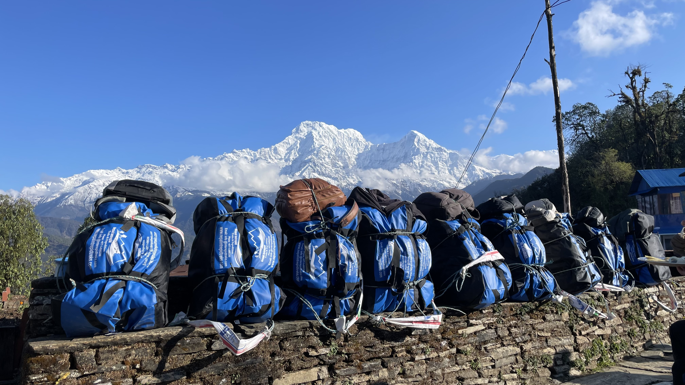
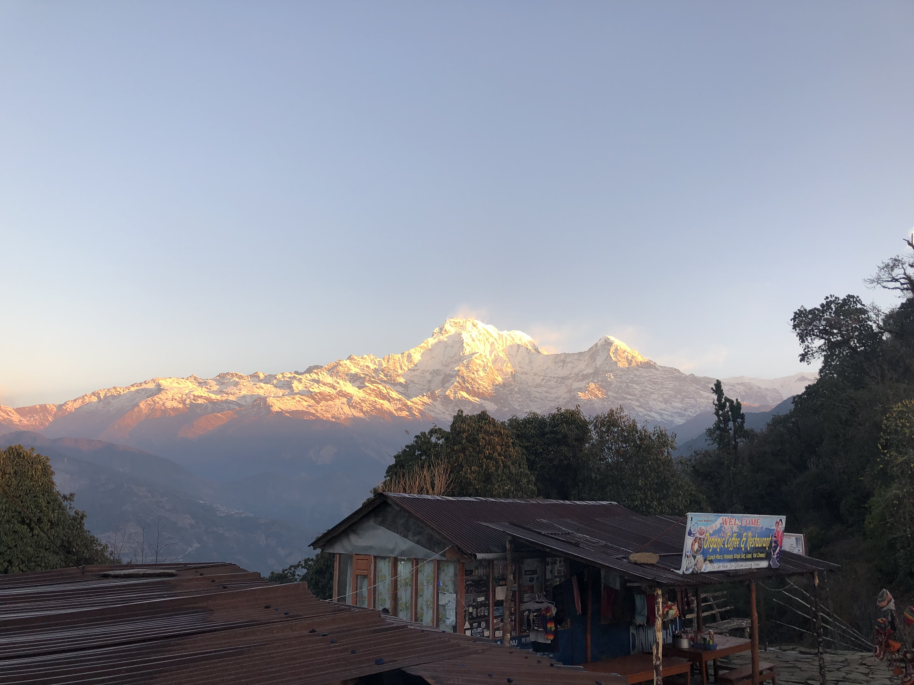
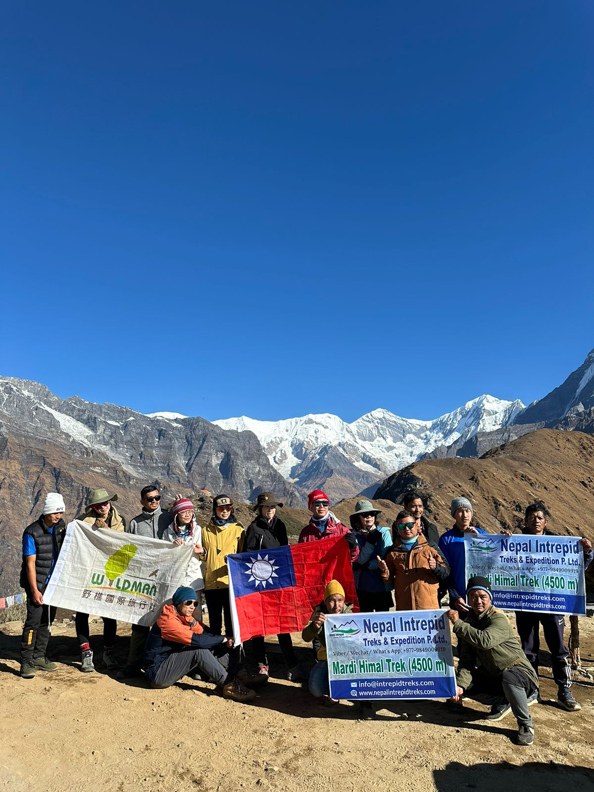
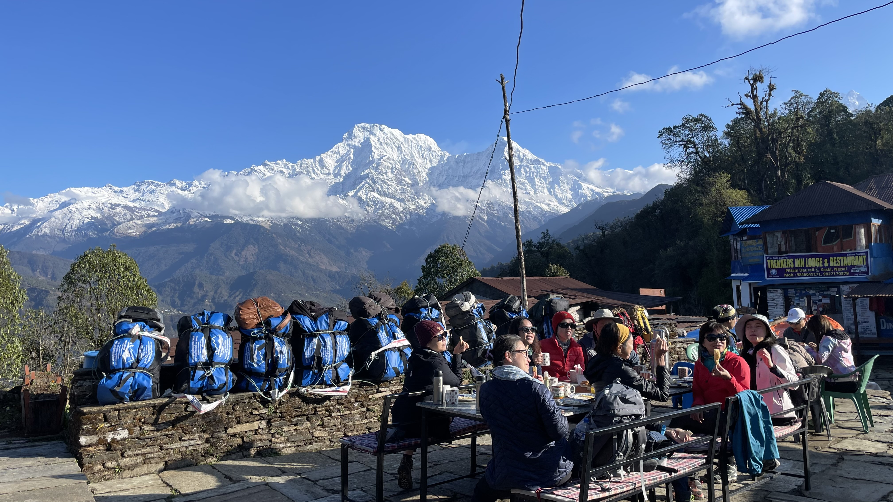
Day 2: Scenic Overland Drive from Kathmandu to Pokhara
Kathmandu to Pokhara – approximately 822 m / 2,697 ft
Duration: 6 to 7 hours scenic drive (approx. 200 km)
Max Elevation: 1,355 m descending to 822 m
Elevation Gain/Loss: -533 m net descent into Pokhara Valley
Distance & Terrain: Overland highway · Winding river valleys
Following an early breakfast at your Kathmandu hotel, board our comfortable tourist coach or private vehicle for the picturesque overland journey to Pokhara—Nepal's premier lakeside resort city and the primary gateway for all Annapurna adventures. The scenic drive follows the winding Prithvi Highway through lush middle-hill country, tracing the mighty Trishuli and Marsyangdi river gorges past terraced rice fields, vibrant market towns, and suspension bridges.
We make periodic comfort stops along the route for fresh local tea, seasonal fruits, and a hot riverside buffet lunch. As you approach the Pokhara Valley in the afternoon, the dramatic skyline opens to reveal the soaring snow-fluted summit of Machapuchare (Fishtail, 6,993 m) and the Annapurna range towering above the subtropical valley floor. Upon reaching Pokhara, check in to your lakeside hotel. Spend the late afternoon taking an easy stroll along the serene shores of Phewa Lake, enjoying the bustling cafes, or taking a peaceful wooden boat ride before an early night's rest.
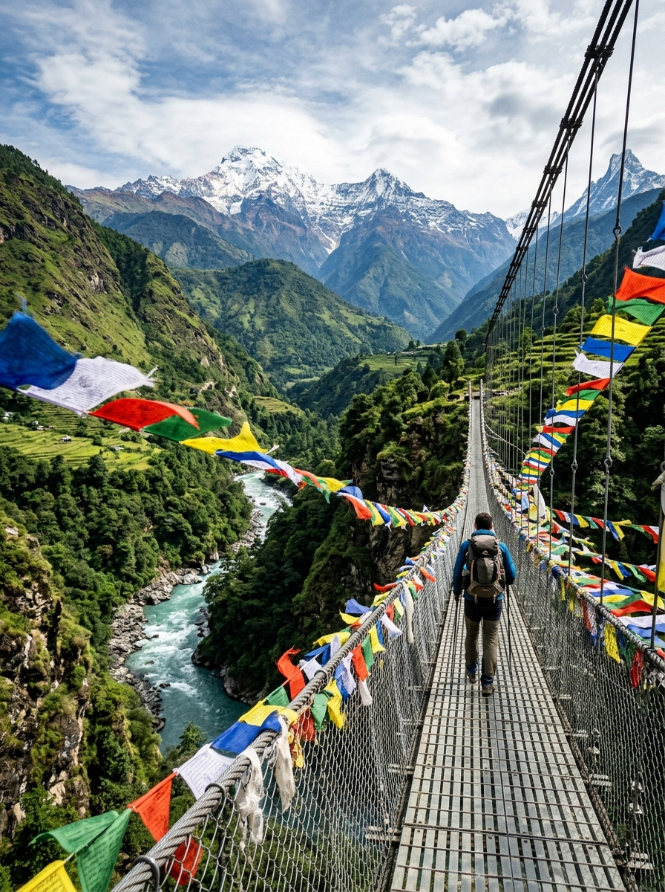
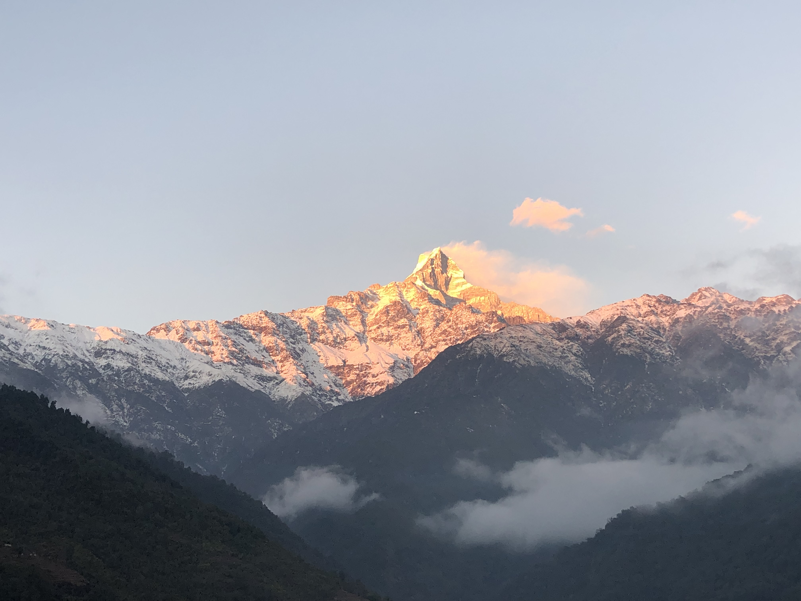
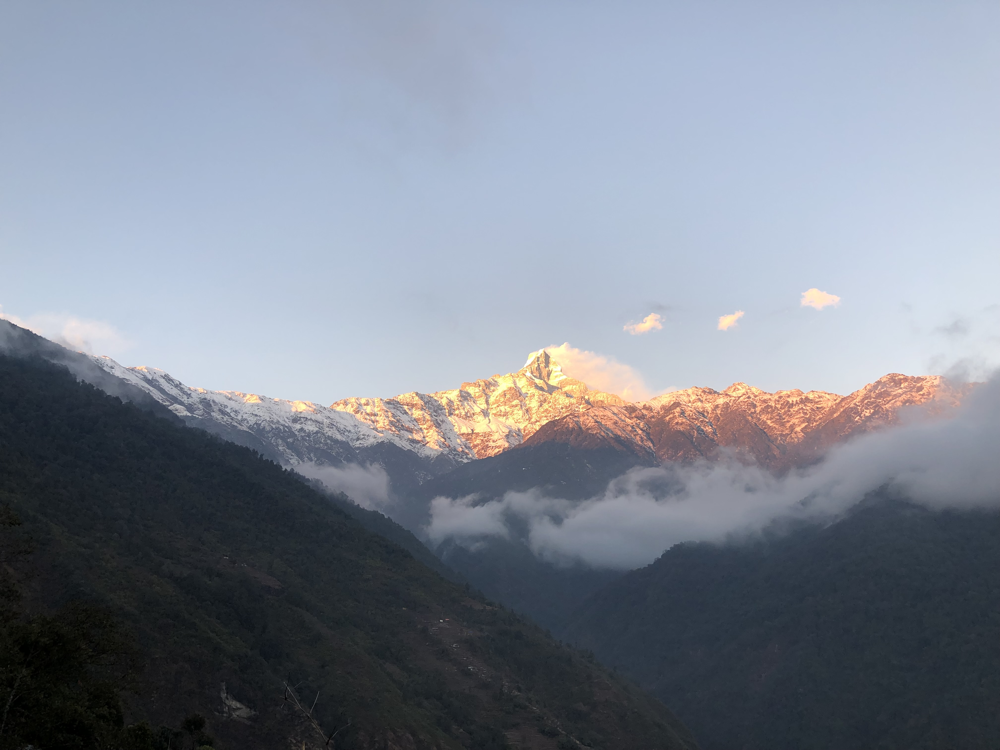

Day 3: Drive Pokhara to Nayapul & Trek to Ghandruk Gurung Village
Pokhara to Ghandruk – approximately 1,940 m / 6,365 ft
Duration: 1.5 hrs drive + approx. 5 hrs trekking (9 km)
Max Elevation: 1,940 m / 6,365 ft
Elevation Gain/Loss: +870 m net ascent from Nayapul (1,070 m)
Distance & Terrain: Approx. 9 km walking · Stone staircases & terraced hills
After breakfast in Pokhara, meet your guide and porters and depart by private vehicle toward Nayapul or Birethanti, driving past scenic agricultural valleys and the rushing Modi Khola. At the ACAP checkpoint in Birethanti, your guide completes all official permit registrations before we lace up our boots and begin the walking portion of our journey.
The trail ascends gradually along stone staircases through terraced millet and rice fields, passing traditional stone farmhouses, cascading waterfalls, and subtropical woods. We stop for lunch at a trailside teahouse before embarking on the steady stone staircase climb leading up to the historic village of Ghandruk (1,940 m). Ghandruk is the largest and most renowned Gurung settlement in the Annapurna foothills, famous for its slate-roofed masonry houses, clean flagstone alleys, and friendly local culture. From village terraces, enjoy spellbinding views of Annapurna South (7,219 m), Hiunchuli, and Machapuchare. In the afternoon, explore the local Gurung cultural museum and Buddhist monastery.
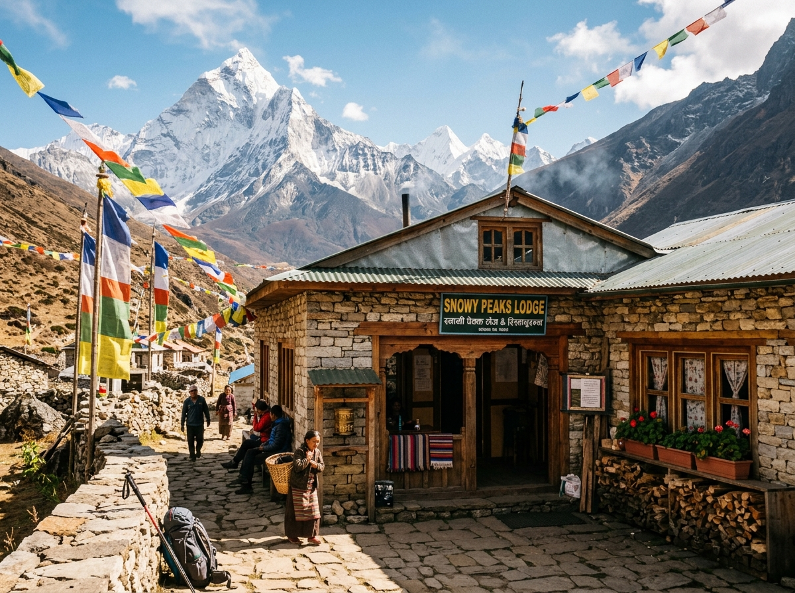
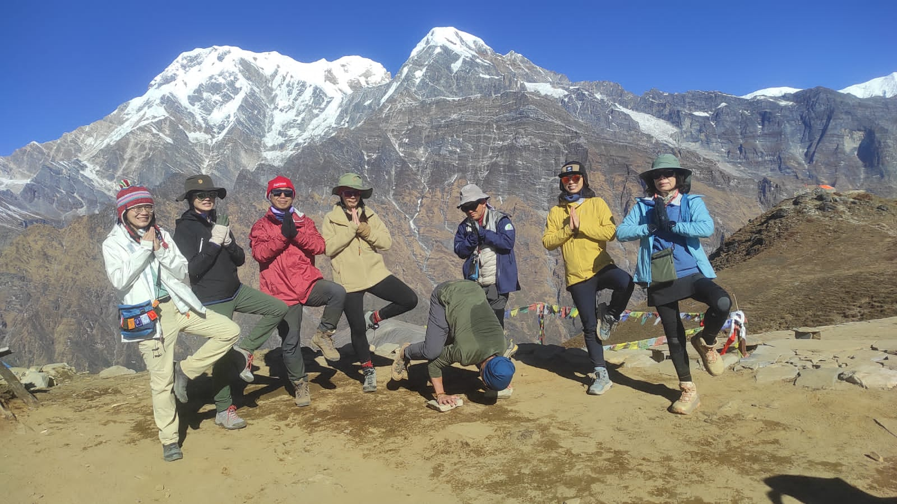
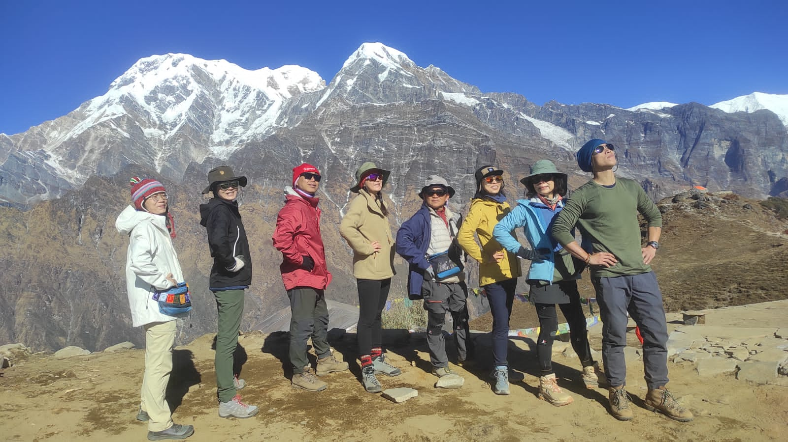
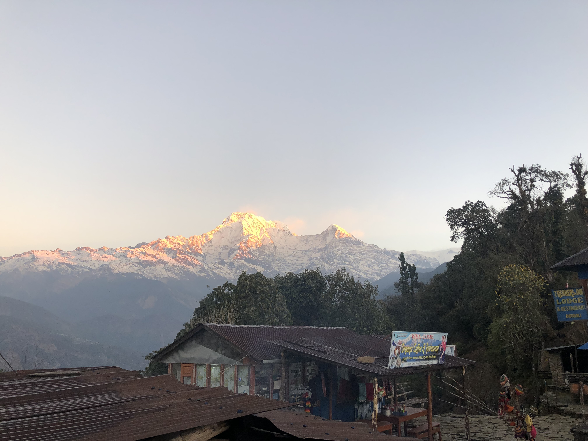
Day 4: Trek from Ghandruk to Tadapani through Ancient Rhododendron Woods
Ghandruk to Tadapani – approximately 2,630 m / 8,628 ft
Duration: 4 to 5 hours trekking (approx. 8.6 km)
Max Elevation: 2,630 m / 8,628 ft
Elevation Gain/Loss: +690 m sustained climb through deep forest
Distance & Terrain: Approx. 8.6 km · Shaded forest trails & mossy stone steps
Wake up early in Ghandruk to witness sunrise lighting up the eastern flank of Annapurna South and Fishtail with glowing rose-gold hues. After a hearty breakfast of porridge, eggs, and Tibetan bread, bid farewell to the village and begin climbing northward along well-maintained stone pathways.
Leaving the cultivated terraces behind, the trail enters a dense, primeval forest of moss-draped oak, maple, and towering rhododendron trees. In the spring months (March–April), these ancient canopies erupt in brilliant blooms of scarlet, pink, and white. The soothing sound of mountain streams and birdsong accompanies our steady climb. We pause for tea and rest at Baisi Kharka before tackling the final forested ridge toward Tadapani (2,630 m). Perched atop a forested mountain pass, Tadapani offers dramatic, close-up panoramas of Annapurna South, Hiunchuli, and Machapuchare directly across the deep valley. Settle into your cozy teahouse and enjoy the brisk mountain air.

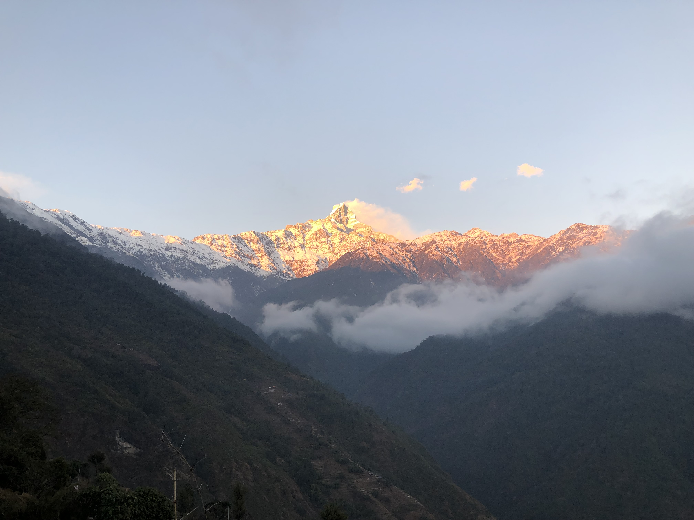
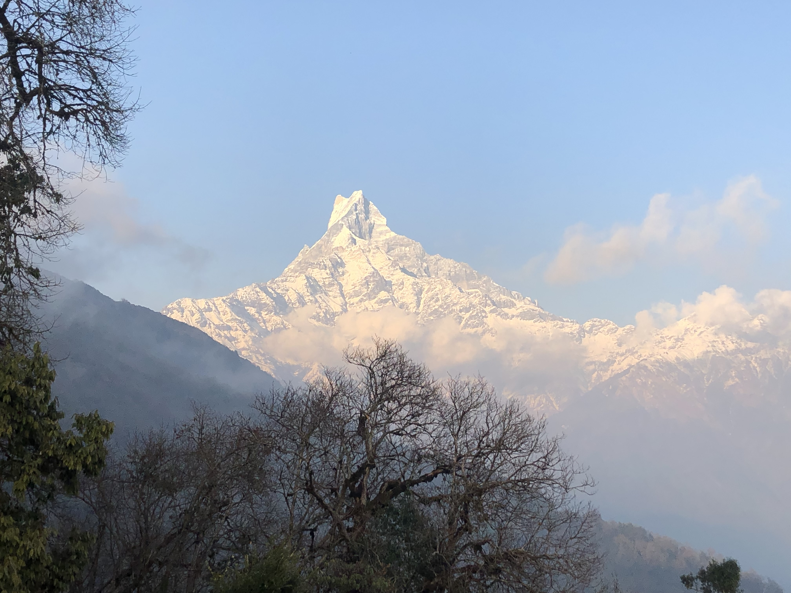
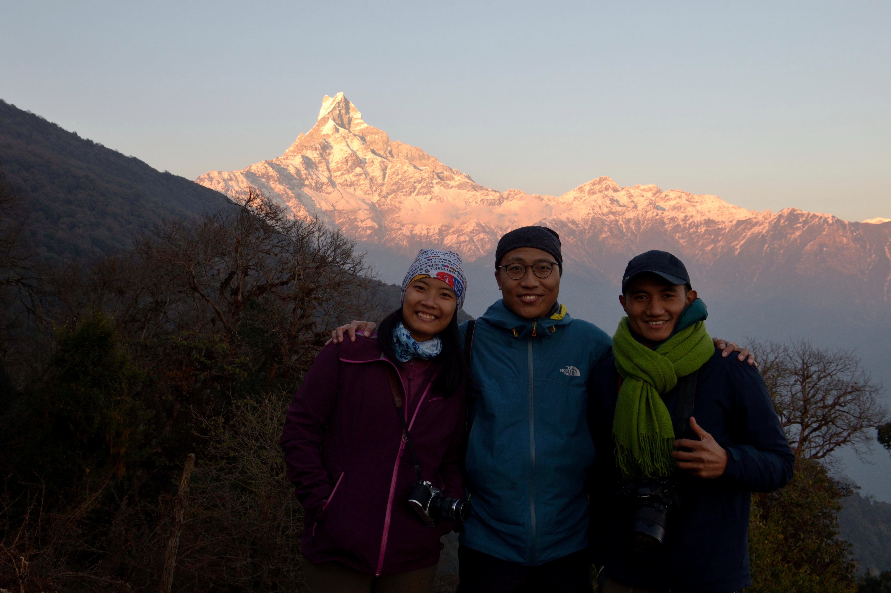
Day 5: Trek from Tadapani to Bayeli Kharka (Branching into Wilderness)
Tadapani to Bayeli Kharka – approximately 3,460 m / 11,352 ft
Duration: 5 to 6 hours trekking (approx. 10 km)
Max Elevation: 3,460 m / 11,352 ft
Elevation Gain/Loss: +830 m gradual ascent into subalpine zone
Distance & Terrain: Approx. 10 km · Narrow forest crests & grazing pastures
Today marks our departure from the heavily traveled trekking corridors as we branch northwest toward Khopra Danda. Leaving Tadapani after breakfast, the trail leaves the Poon Hill circuit behind and enters a remarkably tranquil, secluded mountain wilderness where few other trekkers tread.
The path climbs steadily through virgin rhododendron and bamboo woodlands, following narrow ridge crests with intermittent views of deep forested valleys on either side. We cross babbling alpine brooks and ascend past summer grazing settlements known as Kharkas. Because this stage gains approximately 830 metres of sleeping elevation, your guide will enforce a steady, unhurried pace ("Bistari, Bistari") with frequent hydration breaks. After crossing subalpine clearings where yak and sheep graze, we arrive at the remote settlement of Bayeli Kharka (3,460 m). Settle into the community lodge, warm up around the wood-burning stove in the dining room, and take in the expansive views of Dhaulagiri rising majestically on the western horizon.
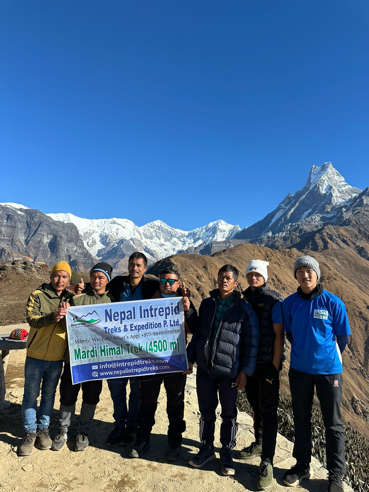
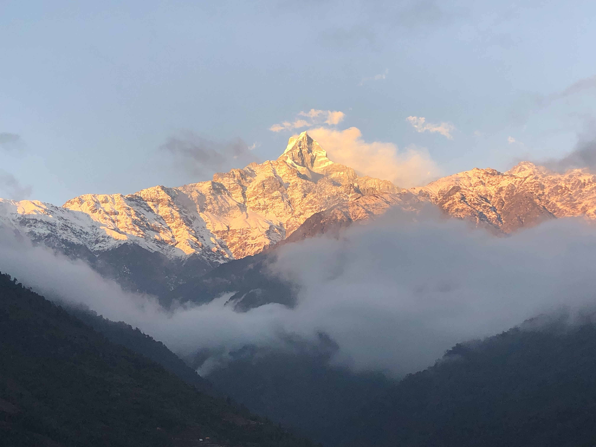
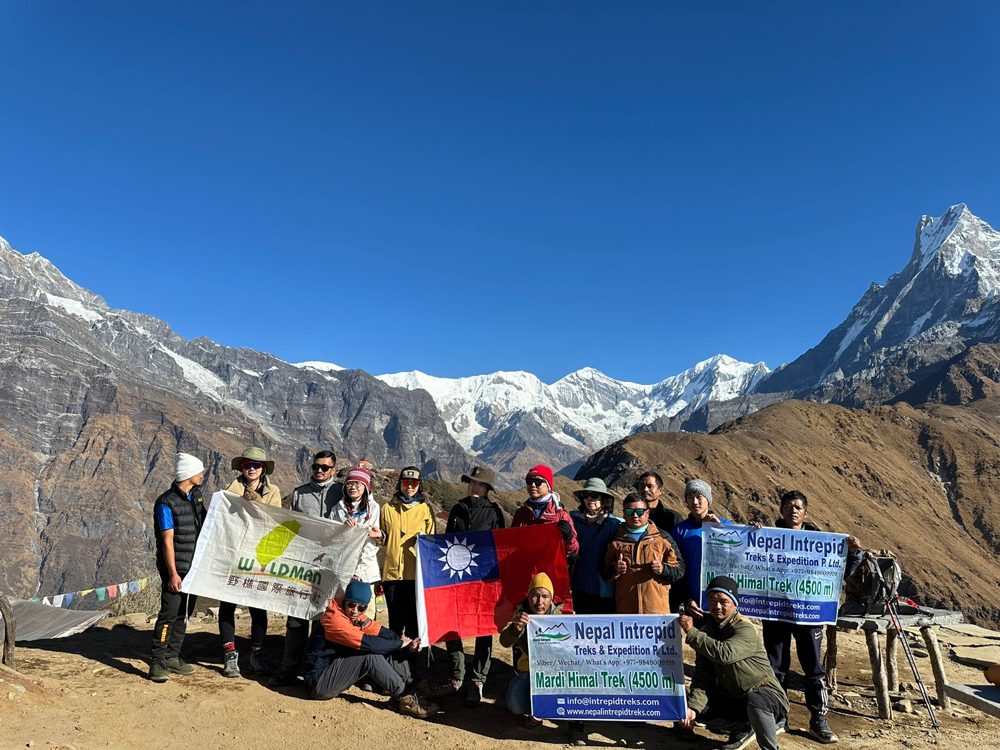
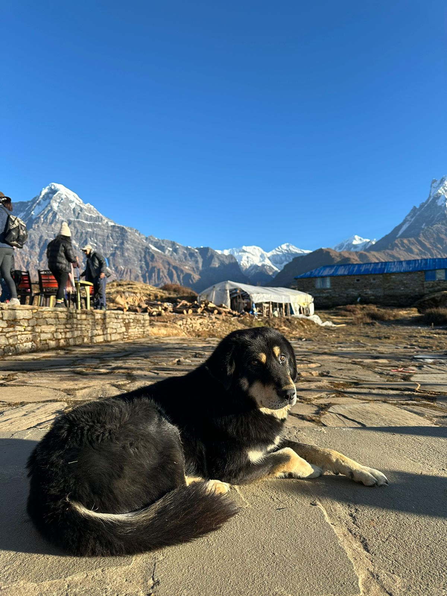
Day 6: Trek from Bayeli Kharka to Upper Chistibung (Acclimatization Staging)
Bayeli Kharka to Upper Chistibung – approximately 2,950 m / 9,679 ft
Duration: 4 to 5 hours trekking (approx. 9 km)
Max Elevation: 3,460 m descending to 2,950 m
Elevation Gain/Loss: -510 m staged descent for acclimatization recovery
Distance & Terrain: Approx. 9 km · Mixed oak forest & pasture contours
Following a crisp morning gazing at the sunrise over Dhaulagiri, begin the trek from Bayeli Kharka toward Upper Chistibung. Today's trail serves a vital physiological role: by descending to sleep at 2,950 metres, your body undergoes optimal acclimatization staging before making the final push up to Khopra Ridge (3,660 m) and Khayer Lake (4,700 m).
The route winds down through enchanting mossy forests of oak and birch, crossing wooden footbridges over crystal-clear glacial streams. Keep your camera ready, as these quiet, undisturbed woods are prime habitat for the Himalayan Monal (Danphe—Nepal’s colorful national bird), musk deer, and barking deer. After reaching Lower Chistibung for a tea break, the trail climbs gently through open pastureland to Upper Chistibung (2,950 m), also known as Dobato or Dhan Kharka. Accommodation here is in a rustic, community-run lodge providing essential comfort, nourishing dal bhat, and an authentic glimpse into high-mountain pastoral life.
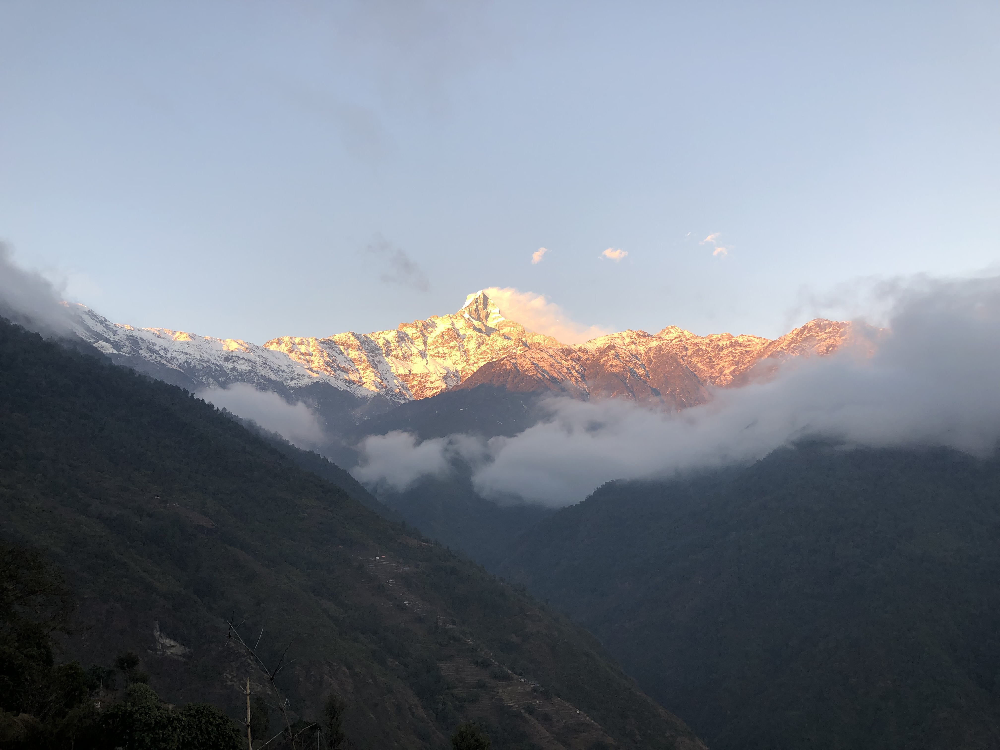
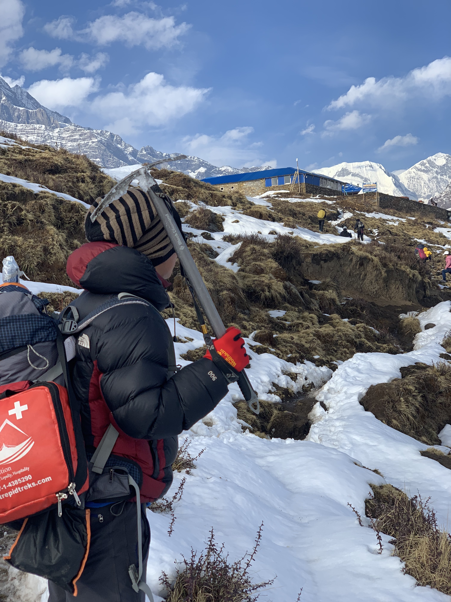
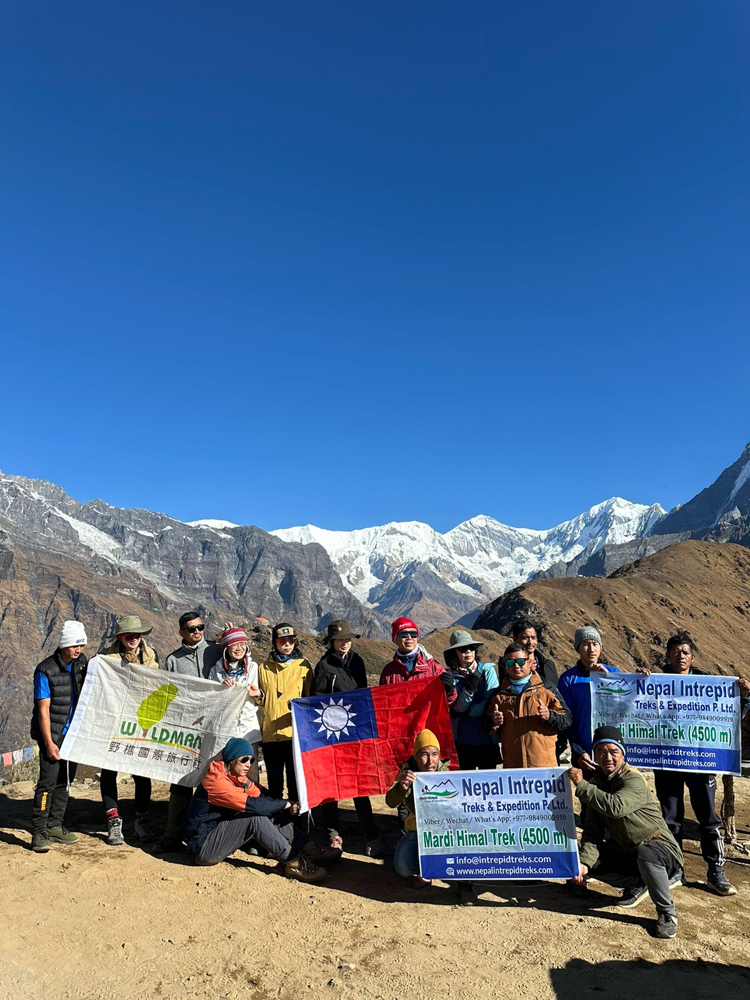
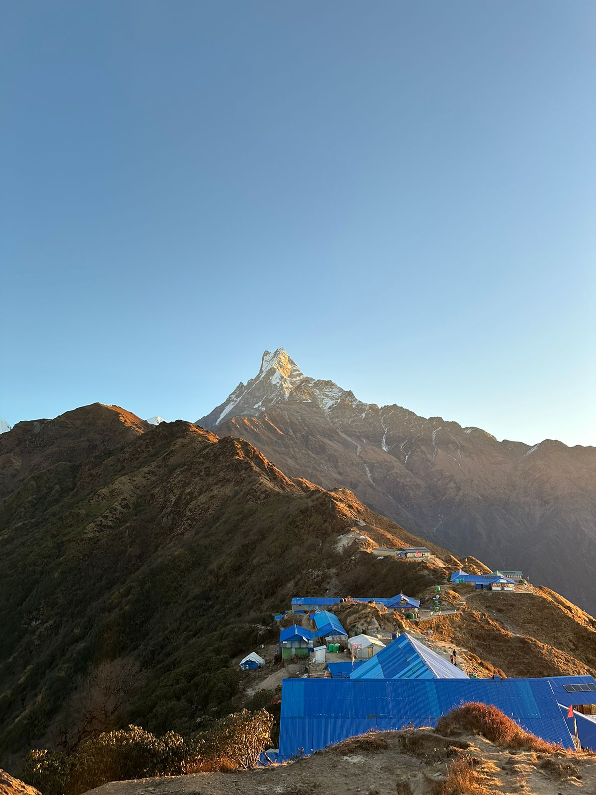
Day 7: Trek from Upper Chistibung to Khopra Ridge (Khopra Danda)
Upper Chistibung to Khopra Ridge – approximately 3,660 m / 12,008 ft
Duration: Approx. 3 hours steady climbing (approx. 6 km)
Max Elevation: 3,660 m / 12,008 ft
Elevation Gain/Loss: +710 m climb ascending above the tree line
Distance & Terrain: Approx. 6 km · Open alpine crest & grassy switchbacks
Today's hike is relatively short in distance but involves a steady, exhilarating ascent as we climb directly toward the crowning viewpoint of the trek: Khopra Ridge (Khopra Danda). Leaving Upper Chistibung after breakfast, the trail leaves the tree line behind, ascending through subalpine grasslands and dwarf rhododendron scrub.
As you gain elevation, the surrounding horizon expands exponentially. To your west, the immense, ice-encrusted eastern face of Mount Dhaulagiri (8,167 m) rises like a titanic white wall directly above the depths of the Kali Gandaki Gorge—the deepest canyon on Earth. To the north, Annapurna South (7,219 m) and the fang-like peak of Fang (Varaharshikhar, 7,647 m) loom staggeringly close. We reach Khopra Ridge (3,660 m) around midday. After checking into the community lodge and enjoying a warm lunch, spend the afternoon marveling at the 360-degree mountain amphitheater, capturing sunset photography, and hydrating thoroughly for tomorrow's demanding excursion to Khayer Lake.
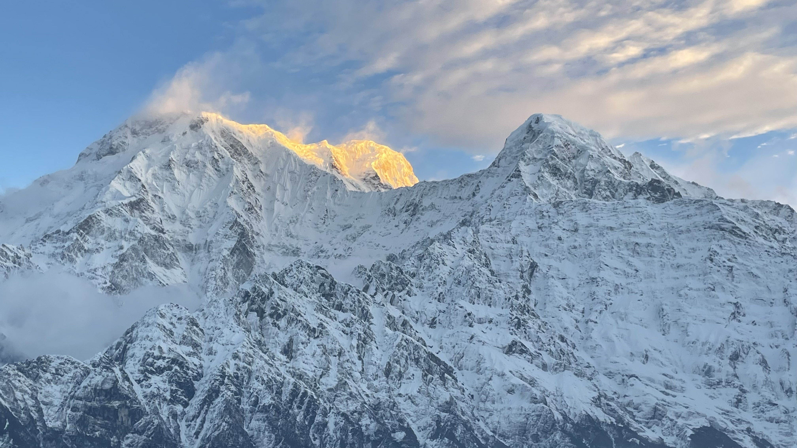

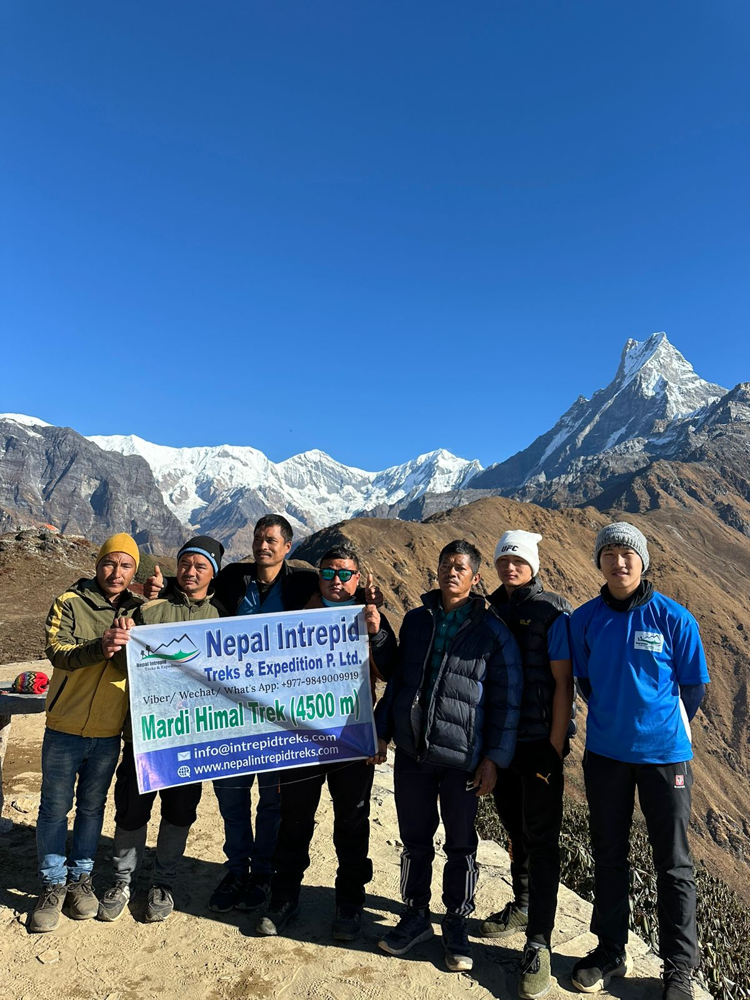
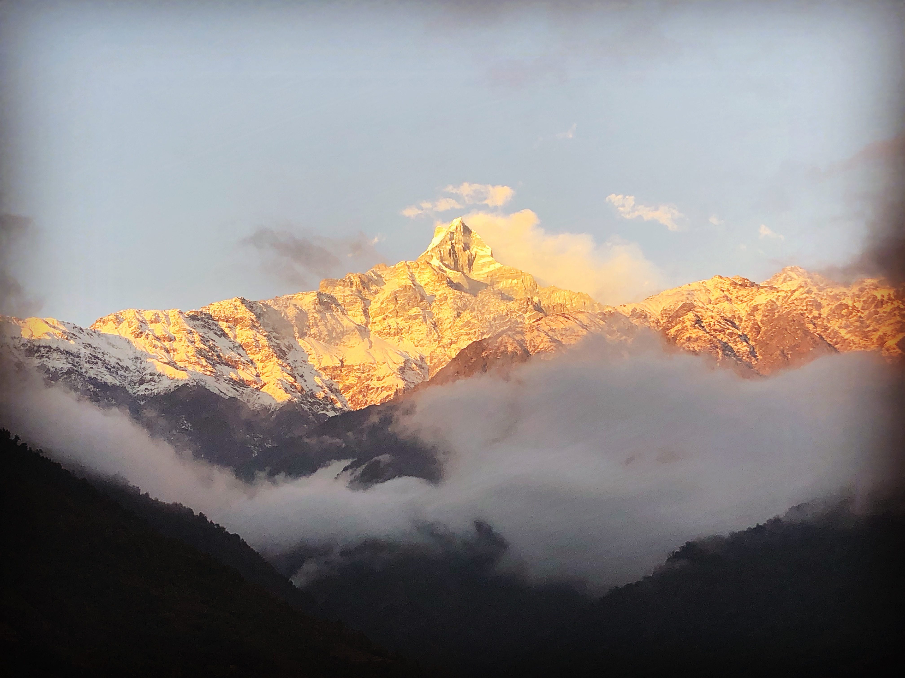
Day 8: High-Altitude Alpine Excursion to Sacred Khayer Lake & Return
Khopra Ridge to Khayer Lake – highest point 4,700 m / 15,420 ft
Duration: 7 to 9 hours strenuous alpine day hike (approx. 15–16 km)
Max Elevation: 4,700 m / 15,420 ft (Khayer Lake)
Elevation Gain/Loss: +1,040 m high-altitude ascent, -1,040 m descent to ridge
Distance & Terrain: Approx. 15–16 km roundtrip · Rugged rocky moraine & scree trails
Day 8 is the grand physical and spiritual highlight of the Khopra Ridge Trek. We start before dawn (around 5:30 AM) with headlamps, carrying a daypack with warm thermal layers, windproof shell, sun protection, high-energy snacks, packed lunch, and at least 2 litres of treated drinking water. No permanent lodges exist along this remote high-altitude trail, making self-sufficiency essential.
The trail climbs steeply along rocky ridgelines and lateral moraines, steadily gaining altitude above the clouds. As we cross 4,000 metres and push toward 4,700 metres, the terrain turns into an austere alpine wonderland of scree, boulders, and hanging glaciers directly beneath the colossal face of Annapurna South. Reaching the shores of sacred Khayer Lake is an unforgettable achievement. The serene turquoise water reflects the icy peaks, and a small Hindu shrine dedicated to Khayer Barahi stands at the lake's edge, draped with prayer flags. Pilgrims visit this holy site during the August full moon, believing the goddess grants wishes for fertility and health. After soaking in the silence and taking photographs, we descend carefully back down the rocky ridges, arriving at Khopra Ridge by mid-afternoon for hot soup, well-earned rest, and celebration.
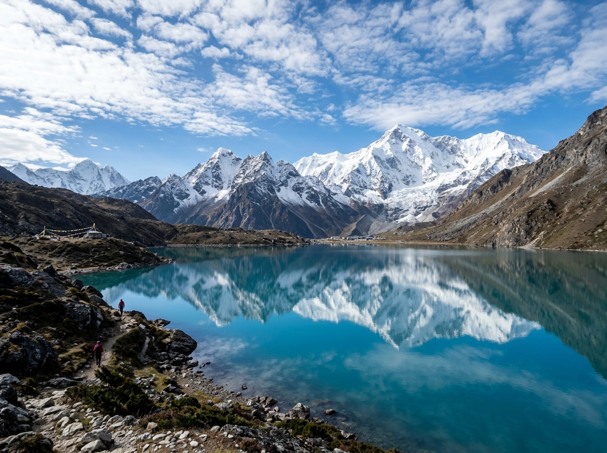
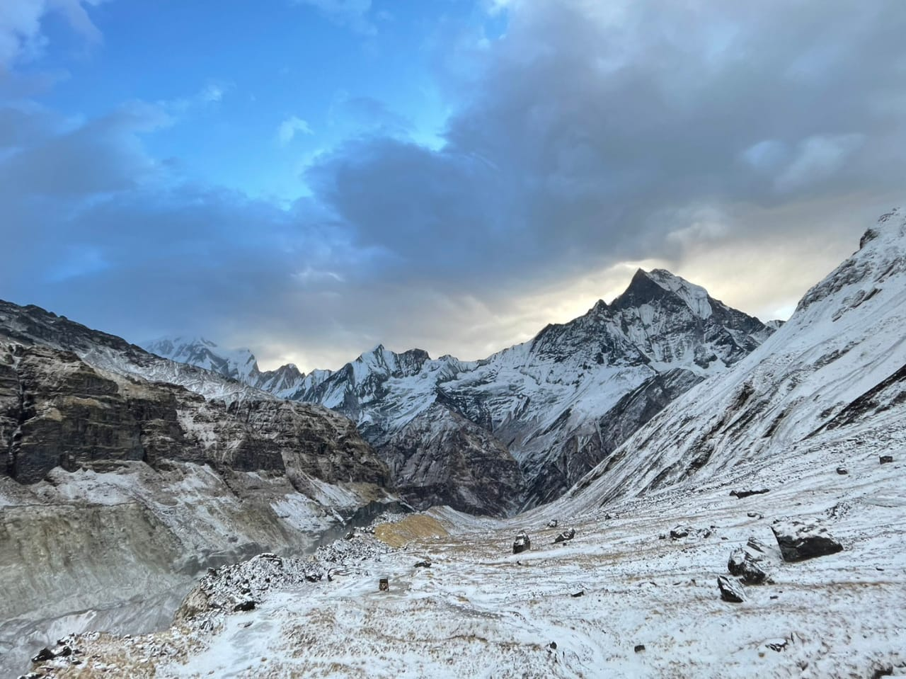
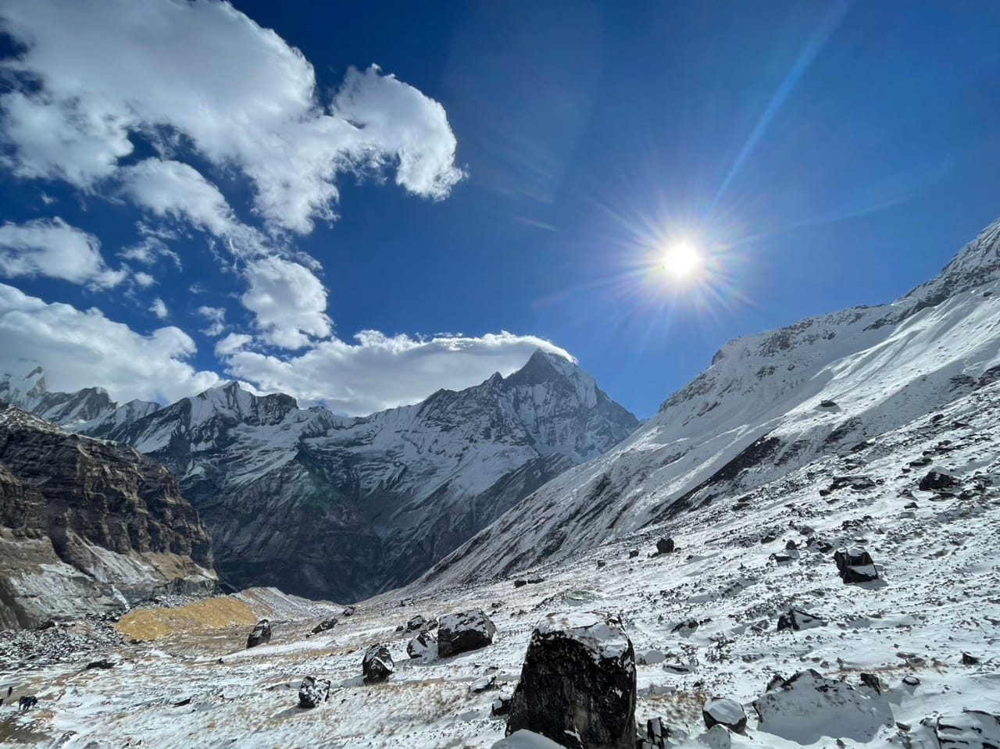
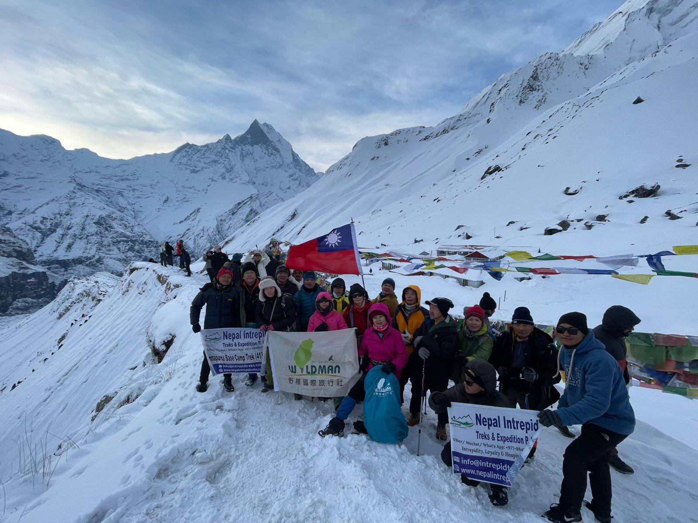
Day 9: Trek from Khopra Ridge to Swanta Magar Village
Khopra Ridge to Swanta – approximately 2,260 m / 7,415 ft
Duration: 4 to 5 hours trekking (approx. 8.5 km)
Max Elevation: 3,660 m descending to 2,260 m
Elevation Gain/Loss: -1,400 m steep descent into agricultural valley
Distance & Terrain: Approx. 8.5 km · Alpine slopes, bamboo thickets & village trails
Wake up to enjoy one last memorable sunrise over Dhaulagiri and Nilgiri from Khopra Ridge. After a hot breakfast, we shoulder our packs and begin our descent from the high ridge toward the lower valleys, heading toward the traditional village of Swanta (2,260 m).
Today's trail involves a significant loss of elevation (approximately 1,400 metres). The path descends steeply along open grassy ridges before entering dense woodlands of bamboo, oak, and rhododendron. Trekking poles are highly beneficial on this section to cushion the knees and stabilize footing on uneven stone paths. As we lose altitude, the air becomes warmer and the vegetation increasingly lush. We cross a wooden bridge over a rushing river and arrive in the picturesque village of Swanta, inhabited primarily by the Magar ethnic community. Swanta features beautiful terraced potato and barley fields, a local secondary school, and a peaceful, non-commercial atmosphere. Enjoy a relaxing afternoon exploring the village lanes and resting your legs.
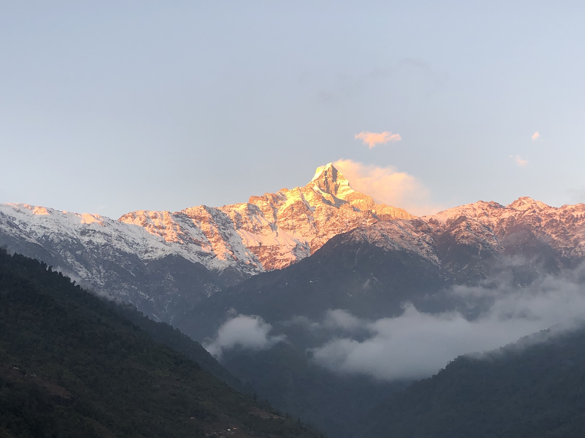
Day 10: Trek from Swanta to Ghorepani Pass
Swanta to Ghorepani – approximately 2,880 m / 9,449 ft
Duration: Approx. 5 hours trekking (approx. 10 km)
Max Elevation: 2,880 m / 9,449 ft
Elevation Gain/Loss: +620 m ascent through forest ravines
Distance & Terrain: Approx. 10 km · River suspension bridges & stone staircases
Following a hearty village breakfast in Swanta, begin today's trek by descending through terraced farmlands to a rushing mountain stream. We cross a suspension bridge and pass a traditional watermill used by locals to grind maize and wheat into flour.
From the river, the trail begins a steady climb through beautiful mixed forests, passing through the small settlement of Chittre. Here, our path rejoins the historic trans-Himalayan trade route that connects Pokhara with Mustang and Tibet. Climbing stone stairways bordered by ancient rhododendron trees, we reach the bustling hill settlement of Ghorepani (2,880 m) by early afternoon. Ghorepani ("Horse Water") is situated on a major mountain pass with spectacular panoramic views across the Dhaulagiri and Annapurna ranges. Settle into your teahouse, enjoy hot showers and bakery treats, and prepare your warm layers and headlamp for tomorrow morning's pre-dawn excursion to Poon Hill.

Day 11: Poon Hill Dawn Sunrise (3,210 m) & Ridge Traverse to Mohare Hill
Ghorepani to Poon Hill & Mohare Danda – approximately 3,300 m / 10,827 ft
Duration: 4 to 5 hours total walking (approx. 7 km)
Max Elevation: 3,300 m (Poon Hill: 3,210 m)
Elevation Gain/Loss: Dual panoramic viewpoints with rolling ridge traverse
Distance & Terrain: Approx. 7 km · Sunrise stone stairways & pine-fringed ridgelines
A pre-dawn wake-up call at 4:45 AM sets the stage for one of Nepal's most iconic mountain spectacles. With headlamps on, we make the 45-minute uphill walk along stone stairways to the summit of Poon Hill (3,210 m). As the sun breaks over the eastern horizon, golden light bathes more than 20 major Himalayan peaks, including Dhaulagiri I (8,167 m), Annapurna I (8,091 m), Annapurna South, Hiunchuli, Machapuchare, and Manaslu (8,163 m).
After capturing photographs and enjoying hot spiced tea from the summit stall, we descend back to Ghorepani for breakfast. Afterward, we embark on a scenic traverse along the ridge crest toward Mohare Hill (3,300 m). Unlike Poon Hill, Mohare Danda is an eco-community initiative developed under the visionary guidance of local leader Mahabir Pun. The trail passes through quiet oak and rhododendron woodlands along a high mountain spine. Arriving at Mohare Hill in the afternoon, we stay at the community eco-lodge—equipped with solar heating and wireless internet—offering stunning sunset vistas across the deep valleys below.
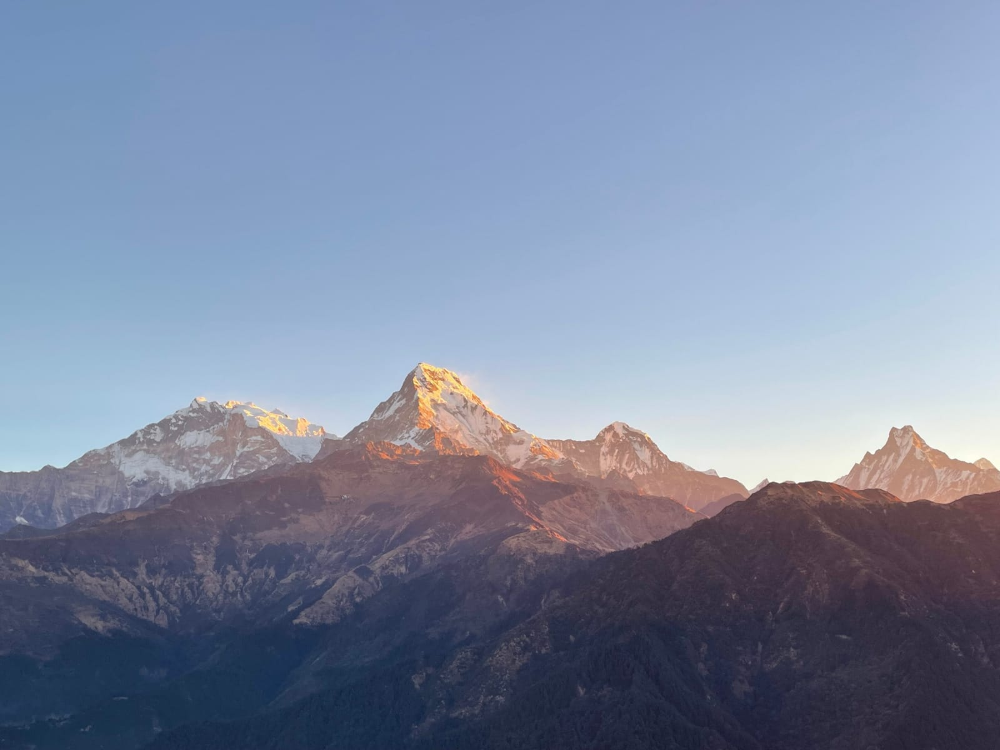
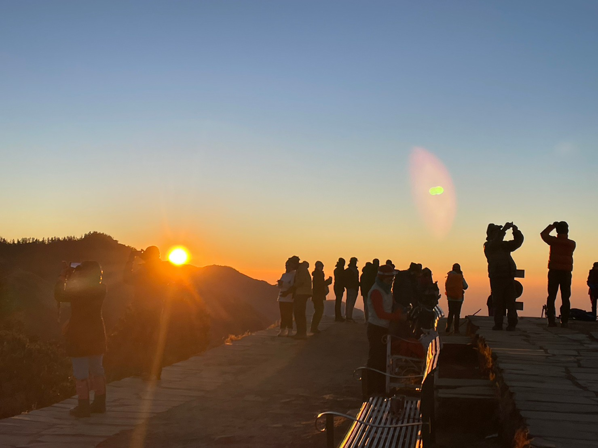
Day 12: Trek from Mohare Hill to Tikhedhunga via Ulleri Stone Steps
Mohare Hill to Tikhedhunga – approximately 1,480 m / 4,855 ft
Duration: 6 to 7 hours trekking (approx. 15 km)
Max Elevation: 3,300 m descending to 1,480 m
Elevation Gain/Loss: -1,820 m extended controlled descent
Distance & Terrain: Approx. 15 km · Forest trails & famous Ulleri stone staircases
Begin the morning with breathtaking dawn views from Mohare Hill as the first light strikes the Dhaulagiri and Annapurna massifs. After breakfast at the eco-lodge, we commence our final major descent from the high ridges down into the subtropical river valleys of the lower Annapurna.
The trail descends through tranquil, mossy forests and pasture clearings, gradually rejoining the main Poon Hill trail near Ulleri. From Ulleri, we navigate the famous 3,280 stone steps that descend steeply toward the roaring Bhurungdi Khola. Take your time, maintain a controlled cadence, and utilize trekking poles to relieve knee pressure. We cross a high suspension bridge over the river and arrive at the welcoming village of Tikhedhunga (1,480 m). Settle into your lodge, enjoy a refreshing drink, and relax as the high-altitude challenges of the trek come to a close.
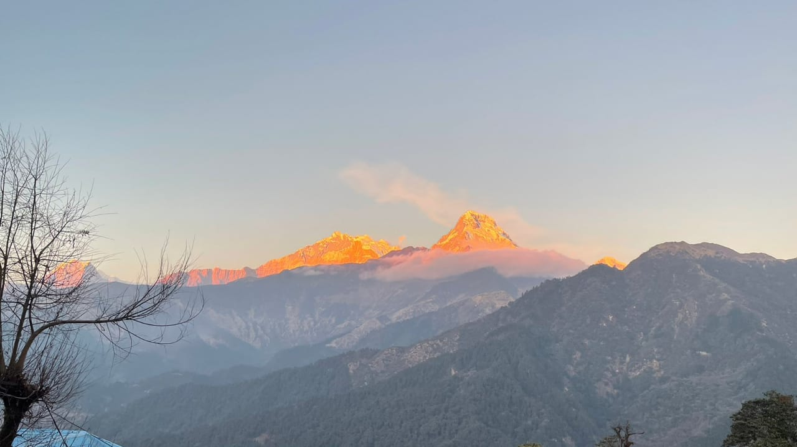
Day 13: Trek Tikhedhunga to Nayapul & Private Drive to Pokhara
Tikhedhunga to Pokhara – approximately 822 m / 2,697 ft
Duration: Approx. 4 hrs walk + 1.5 hrs private drive (9 km walk + 42 km road)
Max Elevation: 1,480 m descending to 822 m
Elevation Gain/Loss: -658 m gentle river valley descent
Distance & Terrain: Approx. 9 km walk · Subtropical riverside trail & paved highway
Enjoy a relaxed morning breakfast in Tikhedhunga listening to the roar of the Bhurungdi river. Today's walking is gentle and enjoyable as we follow the riverside path downstream through lush subtropical forests, small stone hamlets, and cultivated banana and citrus orchards.
We pass through Hile and reach the bustling settlement of Birethanti, where we cross the suspension bridge over the Modi Khola and check out at the ACAP permit post. Continuing 30 minutes along the road, we reach Nayapul, marking the official completion of our trekking circuit. Here, our private vehicle awaits to transport our group back to Pokhara (approximately 1.5 hours drive). Upon arriving at your Lakeside hotel, enjoy a long, hot shower, clean clothes, and an afternoon of relaxation. In the evening, gather for a celebratory meal at one of Lakeside’s famous lakeside restaurants, raising a toast to an extraordinary journey across Khopra Ridge and Khayer Lake.
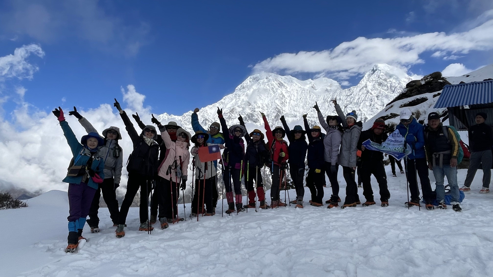
Day 14: Scenic Overland Highway Drive from Pokhara to Kathmandu
Pokhara to Kathmandu – approximately 1,355 m / 4,445 ft
Duration: 6 to 8 hours highway drive (approx. 200 km)
Max Elevation: 1,355 m / 4,445 ft
Elevation Gain/Loss: Return highway journey to capital valley
Distance & Terrain: Paved highway · Marsyangdi & Trishuli river valleys
After breakfast at your Pokhara hotel, board our private tourist transport for the return drive to Kathmandu. The route winds through the scenic river valleys of the Marsyangdi and Trishuli, providing one last look at rural Nepal's terraced hills, suspension bridges, and bustling roadside markets.
We stop en route for tea and lunch at a highway restaurant. Arriving back in Kathmandu in the afternoon, transfer to your hotel. Spend your remaining hours souvenir shopping in Thamel for pashminas, thangkas, and handcrafted singing bowls, or exploring Kathmandu's historic squares. In the evening, join the Namaste Hiking Trek management team for a special farewell dinner to celebrate the successful completion of the Khopra Ridge Trek, receive your trek certificate of completion, and share memories of your time in the Annapurna mountains.
Day 15: Hotel Checkout & Final International Departure from Kathmandu
Kathmandu – Tribhuvan International Airport (1,355 m)
Duration: 30 to 45 mins private airport transfer
Max Elevation: 1,355 m / 4,445 ft
Elevation Gain/Loss: International departure
Distance & Terrain: Airport transit · Paved city streets
Your 15-day Khopra Ridge Trek adventure draws to a close today. Enjoy breakfast at your hotel and spend any remaining free time packing your luggage and taking in final views of Kathmandu.
Depending on your international flight departure schedule, our airport representative and private driver will meet you at your hotel lobby approximately 3 hours prior to takeoff. You will be transferred to Tribhuvan International Airport (TIA) for your flight home, carrying with you lifelong memories, stunning photographs, and the deep satisfaction of having stood at Khopra Ridge and sacred Khayer Lake under the shadow of the mighty Himalayas. Namaste, and safe travels!
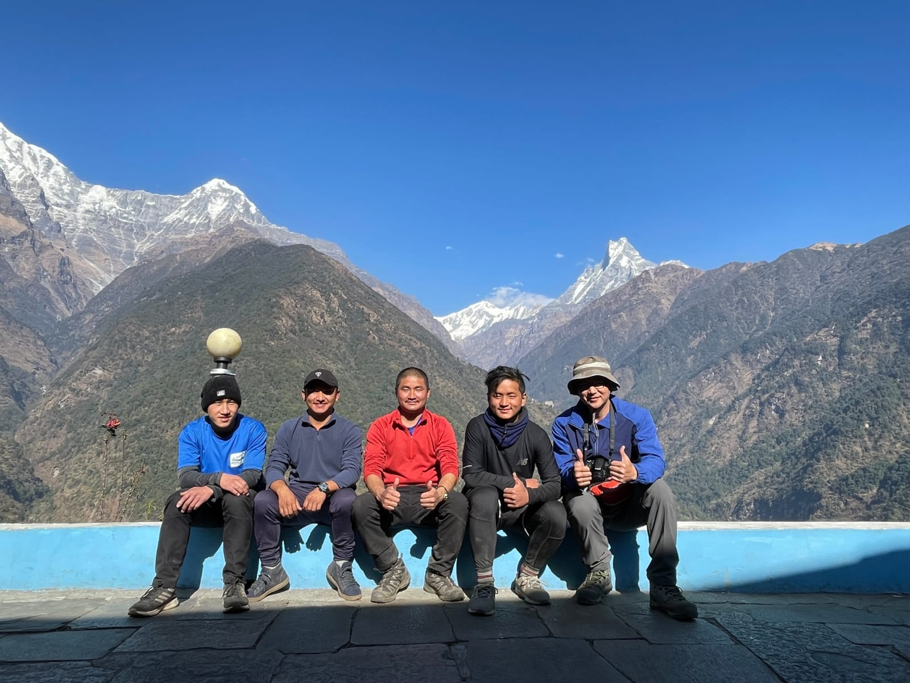
Not satisfied with this Itinerary?
Are you interested on planning a custom trip or adding Annapurna Base Camp? It only takes 2 minutes.
What is Included in Khopra Ridge Trek Package
International Airport Transfers x 2
Private airport pickup on Day 1 and drop-off on Day 15 in Kathmandu with garland welcome.
Kathmandu – Pokhara Overland Transfers
Comfortable roundtrip tourist coach or private vehicle road journey along the Prithvi Highway (Day 2 & Day 14).
Private Trailhead Road Transfers
Private vehicle from Pokhara to Nayapul/trailhead on Day 3 and return transfer from Nayapul to Pokhara on Day 13.
Annapurna Conservation Area Permit (ACAP)
All official Annapurna Conservation Area entrance permits, local government fees, and TIMS paperwork.
Government-Licensed Mountain Guide
Experienced English-speaking trekking guide certified in Wilderness First Aid and high-altitude emergency safety.
Dedicated Mountain Porters
1 porter for every 2 trekkers (max 20–22 kg shared weight limit, compliant with IPPG standards).
4 Nights City Hotel Accommodation
2 nights in Kathmandu (Days 1 & 14) and 2 nights in Pokhara (Days 2 & 13) in 3-star standard hotels with daily breakfast.
10 Nights Teahouses & Community Lodges
Handpicked twin-share accommodation along the trail, including community lodges at Bayeli Kharka and Khopra Ridge.
All Meals on Trek (Breakfast, Lunch & Dinner)
11 days of full board trail meals (freshly prepared hearty dishes like Dal Bhat, noodles, porridge, and hot tea/coffee).
Daily Oximeter Checks & Medical First Aid Kit
Twice-daily blood oxygen (SpO2) and pulse monitoring, first aid kit, and 24/7 emergency helicopter rescue dispatch.
Complimentary Duffle Bag & Annapurna Map
Complimentary 100L waterproof duffle bag for porter portage, official Annapurna topographical map, and completion certificate.
Fair Wages & Staff Emergency Insurance
All guide and porter daily living allowances, mountain gear, full medical/emergency evacuation insurance, and legal wages.
What is Excluded in Khopra Ridge Trek Package
Nepal Tourist Entry Visa
Nepal entry visa fee ($30 USD for 15 days or $50 USD for 30 days), obtainable on arrival at Tribhuvan International Airport.
International Airfare & Travel Insurance
International flights to/from Kathmandu and mandatory travel insurance covering high-altitude hiking up to 5,000m and helicopter evacuation.
City Lunches and Dinners
Lunches and dinners in Kathmandu and Pokhara (allowing you flexibility to enjoy the diverse restaurants and cafes).
Personal Teahouse Expenses
Hot showers ($2–$4), battery charging ($2–$3), Wi-Fi scratch cards, mineral water, soft drinks, and bar bills along the trail.
Personal Trekking Equipment
Personal gear including sleeping bag, down jacket, trekking boots, and trekking poles (available for rent in Kathmandu for $1/day).
Tips & Gratuities for Support Crew
Customary tipping for your mountain guide and porters (recommended $10–$15 per day per trekker split among crew).
Booking Dates & Availability for Khopra Ridge Trek (15 Days)
05
AUG
Aug 5 – Aug 18, 2026
AVAILABLE$1,499 pp
09
AUG
Aug 9 – Aug 22, 2026
AVAILABLE$1,499 pp
13
AUG
Aug 13 – Aug 26, 2026
AVAILABLE$1,499 pp
17
AUG
Aug 17 – Aug 30, 2026
AVAILABLE$1,499 pp
21
AUG
Aug 21 – Sep 3, 2026
AVAILABLE$1,499 pp
Packing List for Khopra Ridge Trek (15 Days)
Essential Info: Don’t have it? Rent it with us — USD 1/day per item
Printable PDF
Check off items as you pack them. Your packing state is saved automatically in your browser!
Hiking Gear (11 items)
Trekking Poles
Trail stabilizers, save those knees downhill! • 1 pair
Backpack
With porter 25–35L, going solo 40–60L • 1
Reusable Water Bottles
Hydrate — and hug at night when it’s filled with hot water! • 1
MicroSpikes
Grip it, handle icy paths like a boss • 1 pair
Trekking Boots
Boots for support, trail runners for pros • 1 pair
Headlamp
Keeps hands free — early hikes and midnight nature calls! • 1
Dry Bag / Zip-Lock Bags
Stay organized and stash the stinky • 1
Rain Cover for Backpack
Shields your bag from rain and rough rides! • 1
Sunglasses
Lose one, break one, still look cool • 2 pairs
Sun Hat / Cap
Shield your face — no one likes a sunburned selfie • 1
Packing Organizers
Tame your packing chaos like a pro-level trekker • 1
Garments (19 items)
Base Layer Set (Thermal)
A thermal hug for windy ridges • 2
Fleece / Microfiber Jacket
Like a wearable hug — light, warm, essential • 1
Quick-Dry Tees (Merino)
Sweat less, smell less, hike more • 3
Quick-Dry Pants
Dries fast — cross rivers, dodge rain • 1
Trekking Pant (Soft Shell)
Built for Nepal’s trails, tough and comfy • 1
Trekking Pant (Hard Shell)
Bring the big guns for snow and storm duty • 1
Windbreaker Jacket
Windproof your journey without packing bulk • 1
Waterproof Jacket
Because soggy trekkers aren’t happy trekkers • 1
Waterproof Pant
Wet pants? No thanks — bring these just in case • 1
Down Jacket
Your puffy cloud for chilly dawns and nights • 1
Cosy Outfit for Teahouses
Trade hiking boots for this once you’re in the teahouse • 1 set
Socks (Liner / Trekking)
Happy feet = happy trek. Bring extras! • 6 pairs
Gloves — Liner
Wear under gloves or for chilly tea stops • 1 pair
Gloves — Windproof
Block those winds sweeping down from the peaks • 1 pair
Woolen Hat
Block out wind and keep your brain warm • 1
Beanie
Extra warmth while sipping tea in the yard • 1
Neck Gaiter
Neck protector, face warmer, and style icon in one • 1
Under Garments
Laundry day is rare — pack backups! • 3
Bra
Supportive and breathable for long trail days • 3
Sleeping (5 items)
Sleeping Bag
Sleep snug — from stars to teahouse beds • 1
Sleeping Bag Liner
Add warmth and avoid funky smells • 1
Earplugs
Snorers in the next room? Problem solved • 2 sets
Travel Pillow
Nap like royalty, even in the Himalayas • 1
Eye Mask
Sun’s up? Not till you are • 1
Toiletries & Hygiene (16 items)
Microfiber Towel
Dries fast, packs light — towel off in style • 1
Toothbrush & Toothpaste
Morning breath? Not on these trails • 1 set
Wet Wipes
No shower? No problem — wipes to the rescue • 2 packs
First Aid Kit
Leeches, scrapes, bruises — be ready • 1
Sunscreen
High-altitude sun bites — lather up • 1
Blister Kit
Blisters sneak up — treat them quick • 1
Soap / Shampoo
Bucket shower? You’ll still feel fresh • 1 set
Lip Balm
Wind or sun, protect those lips • 1
Comb or Brush
Brush off the dust — hair’s still happy • 1
Period Supplies
Periods don’t pause for mountains • As needed
Nail Clippers / Tweezers
Snagged gear or sharp toenail? Clip it clean • 1
Toilet Paper
Don’t get caught short — carry your own roll • Varies
Sanitising Gel
Sanitize before snack time, at every stop • 1
Deodorant
Feel fresh, even 3 days from a shower • 1
Mirror (Optional)
For grooming or checking windburn • 1
Water Purification Tablets / Filters
Turn glacier melt into safe drinking water • 1
Electronics (9 items)
Camera
Snap yaks, peaks, and village smiles • 1
Phone
Call home, check maps, jam tunes — one device • 1
GPS Watch / Device
Track your climbs, brag later • 1
External Hard Drive
No backup, no proof — save it all • 1
Cables
Juice up your phone, cam, or headlamp • 1
Power Bank
Dead battery? This keeps you going • 1
E-Book Reader
Books in your pocket — read and relax • 1
Travel Adapter (Type D, C & M)
Stay charged across Nepal • 1
Earphones
Tunes or podcasts — your trail soundtrack • 1
Miscellaneous (10 items)
Lightweight Shoes / Sandals
Post-hike bliss — slip into comfort • 1 pair
Gaiters
Keep snow and grit out of your boots • 1 pair
Playing Cards / Card Games
Perfect for rest days or teahouse hangs • 1
Multitool
Solves (almost) everything in one flip • 1
Journal / Pen
Write. Reflect. Doodle. Dream. • 1 set
Repair Kit
Patch up gear before it falls apart • 1
Insulated Flask
Sip hot tea in icy wind like a local • 1
USD 15–20 in Nepalese Currency
Tea, snacks, or surprise tips — always handy • As needed
Snacks
Energy Bars, Protein, Trail Mix • Varies
Electrolyte Tablets or Powder
Beat cramps — fuel up with electrolytes • Varies
This packing list is a guide, not a rulebook. On the meeting day in Kathmandu we go through your gear together — anything missing you can rent from us for USD 1 a day per item, or we’ll point you to the right shop for your budget. Almost everything is available in Kathmandu, so first-time trekkers arrive light and leave prepared.
Read before you book, Khopra Ridge Trek
To help you prepare for the 15-day Khopra Ridge Trek, we have compiled an essential operational guide covering community lodge accommodations, trail nutrition, acclimatization protocols, 10-week conditioning, ACAP permits, and high-altitude safety for Khayer Lake (4,700 m).
Click on any category below to expand details. As you review each topic, check off items to keep track of your expedition preparations.
0%
Essential Reading Incomplete
0 of 21 sections reviewed
Accommodation: Community Lodges & Mountain Teahouses
10 Nights Lodges + 4 Nights HotelsAccommodation on the Khopra Ridge Trek offers a diverse and authentic experience, evolving as you journey from modern city hotels into traditional mountain villages and high-altitude community lodges.
Hotels in Kathmandu & Pokhara (4 Nights): In Kathmandu (Days 1 & 14) and Pokhara (Days 2 & 13), you will stay in handpicked 3-star standard tourist hotels. Rooms feature private en-suite bathrooms, 24/7 hot showers, complimentary high-speed Wi-Fi, air conditioning, and daily breakfast.
Traditional Teahouses in Ghandruk, Tadapani, Swanta & Ghorepani: In established trekking villages, you will stay in charming family-run teahouses. Rooms are generally twin-share with wooden twin beds, clean mattresses, pillows, and blankets. Shared or private western-style and Asian squat toilets are available depending on the village.
Community Lodges at Bayeli Kharka, Upper Chistibung & Khopra Ridge: Along the off-the-beaten-path section, accommodation is provided by community-owned lodges. These rustic stone lodges were built to channel tourism benefits directly to local schools and healthcare. While facilities are simple—featuring shared squat or seated toilets, solar lighting, and unheated bedrooms—the communal dining rooms are warmly heated by central wood-burning stoves, offering a welcoming atmosphere where trekkers gather for dinner and conversation.
Important Note on Khayer Lake: There are no overnight lodges at Khayer Lake (4,700 m). The lake is visited exclusively as a day excursion from Khopra Ridge, returning to sleep at the ridge community lodge.
Dining, Food & Water on the Annapurna Trail
Full Board on Trek (B.L.D.)Proper nutrition and hydration are essential for maintaining energy across 11 consecutive walking days and conquering the strenuous ascent to Khayer Lake.
Breakfast Options: Enjoy energizing hot breakfasts including hearty porridge with honey, muesli with warm milk, Tibetan or Gurung fried bread, pancakes, hash browns, and eggs prepared to your choice (boiled, fried, poached, or scrambled), served with hot tea or coffee.
Lunch & Dinner: The ultimate mountain fuel is Dal Bhat Tarkari—a traditional Nepali feast of steamed rice, rich lentil soup, seasonal vegetable curry, spinach, and spicy pickles. Dal Bhat is freshly prepared, highly nutritious, and comes with free refills! Other menu favorites include vegetable fried noodles (chowmein), momo dumplings, potato rosti, vegetable noodle soup (thukpa), macaroni, and pasta dishes.
Khayer Lake Day Pack: On Day 8 (Khayer Lake excursion), we arrange an early 5:00 AM breakfast and carry packed lunches, boiled eggs, bread, and energy bars, as there are no food stalls or teahouses along the high-alpine trail.
Drinking Water: Safe drinking water is readily available. We encourage bringing two 1-litre reusable bottles and water purification tablets (Aquatabs) or a filter (LifeStraw / Sawyer Squeeze). Boiled water can also be purchased at lodges for a small fee (NPR 150–250 per litre), helping eliminate single-use plastic waste in the Annapurna Conservation Area.
Best Time & Seasons for Khopra Ridge Trek
Spring (Mar–May) & Autumn (Sep–Nov)The Khopra Ridge Trek is best undertaken during Nepal's two prime trekking windows: Spring and Autumn.
Autumn (Late September to November) — Best for Mountain Clarity: Autumn is the most popular season for Khopra Ridge. Following the monsoon, the air is crisp, dust-free, and crystal clear. Daytime temperatures range from 12°C to 18°C in the valleys, dropping to -2°C to 5°C at Khopra Ridge at night. October offers the highest probability of unobstructed panoramic views of Dhaulagiri and Annapurna South, with dry trails and optimal conditions for the Khayer Lake excursion.
Spring (March to May) — Best for Blooming Rhododendrons: Spring brings warming temperatures and spectacular blooms. The forests between Ghandruk, Tadapani, and Bayeli Kharka explode in brilliant scarlet, pink, and white rhododendrons. Daytime temperatures average 14°C to 20°C in the foothills and 2°C to 8°C on the ridge. Residual winter snow may linger on the high trail to Khayer Lake in early March, requiring microspikes.
Winter (December to February): Clear skies and fewer trekkers, but temperatures at Khopra Ridge can drop to -10°C to -15°C. Heavy snow may block the trail to Khayer Lake, making the excursion optional or unreachable.
Monsoon (June to August): Heavy rainfall, obscured views, slippery mud, leeches, and landslide hazards on roads make the full circuit generally unadvisable during mid-summer.
A Typical Day on the Khopra Ridge Trail
Daily Mountain RoutineA typical trekking day follows a healthy, natural mountain rhythm aligned with daylight and weather patterns:
6:30 AM – Morning Wake-Up & Breakfast: Wake up to morning mountain views and hot tea. Pack your main duffle bag for your porter, eat breakfast in the dining hall, refill water bottles, and prepare your daypack.
7:30 AM – On the Trail: Begin trekking in the cool morning air. Hiking hours average 4 to 6 hours daily, broken up by short scenic breathers, photography stops, and cultural interactions.
12:00 PM – Trailside Lunch: Stop at a scenic village or teahouse for an hour of rest and a freshly cooked hot lunch.
1:00 PM to 3:30 PM – Afternoon Hike & Lodge Arrival: Complete the afternoon stage to reach your overnight lodge. Settle into your room, change into dry warm clothes, and enjoy hot drinks in the dining hall.
6:30 PM – Communal Dinner & Daily Briefing: Gather around the wood-burning stove for dinner, share stories, play cards, and participate in your guide’s evening briefing and pulse oximeter health check before turning in by 9:00 PM.
Permits & Official Regulations (ACAP & TIMS)
All Permits IncludedThe Khopra Ridge Trek lies entirely within the Annapurna Conservation Area. Namaste Hiking Trek handles all permit paperwork, fees, and government approvals prior to your departure:
1. Annapurna Conservation Area Permit (ACAP): Mandatory entry authorization managed by the National Trust for Nature Conservation (NTNC). Cost is NPR 3,000 (~$25 USD) for foreign nationals and NPR 1,000 for SAARC citizens.
2. Trekkers' Information Management System (TIMS) / Local Registration: Mandatory trekker safety tracking permit administered by the Nepal Tourism Board and TAAN.
Mandatory Guide Regulation: As of April 1, 2023, the Nepal Tourism Board requires all international trekkers in the Annapurna region to be accompanied by a licensed mountain guide. Solo, independent trekking without a guide is no longer permitted by law. All our guides are fully government-certified.
Acclimatization Strategy & Altitude Safety (AMS)
Safety-First ProtocolAlthough lower than Khopra Ridge, the Khopra Ridge Trek reaches 3,660 metres at Khopra Ridge and climbs to approximately 4,700 metres at Khayer Lake. Acute Mountain Sickness (AMS) is a real consideration that requires respect and disciplined staging.
Staged Ascent: Our 15-day itinerary builds elevation progressively: Ghandruk (1,940 m) → Tadapani (2,630 m) → Bayeli Kharka (3,460 m) → Upper Chistibung (2,950 m) → Khopra Ridge (3,660 m). The night in Chistibung allows the body to recover before climbing to the ridge.
Recognizing AMS Symptoms: Mild symptoms include headache, mild nausea, dizziness, fatigue, and poor appetite. If symptoms occur, the Golden Rule applies: Never ascend with altitude symptoms. Inform your guide immediately.
Twice-Daily Oximeter Checks: Your guide carries medical fingertip pulse oximeters to record blood oxygen saturation (SpO2) and resting heart rate every morning and evening.
Khayer Lake Excursion Safety: The hike to Khayer Lake (4,700 m) is an active day hike. If any trekker experiences worsening headache or breathlessness on the approach, our assistant guide will immediately accompany them back down to Khopra Ridge while the rest of the group proceeds safely.
Difficulty, Fitness & 10-Week Training Regimen
Moderate to Challenging GradeThe Khopra Ridge Trek is graded Moderate to Challenging overall, with the Day 8 Khayer Lake excursion being Strenuous.
Physical Demands: The standard trekking days average 4 to 6 hours on stone staircases, dirt paths, and forest roots. The Khayer Lake day requires 7 to 9 hours of steep moraine hiking at high altitude (4,700 m). Additionally, the descent from Khopra to Swanta (loss of 1,400m) and Mohare to Tikhedhunga (loss of 1,820m) requires strong knee and quad endurance.
Suggested 10-Week Training Plan:
- Weeks 1–3: 30–45 mins of brisk walking, jogging, cycling, or swimming 3 times per week to build cardiovascular baseline.
- Weeks 4–6: Add stair climbing or stairmaster workouts (15–30 floors) twice weekly. Incorporate bodyweight squats, lunges, step-ups, and core planks.
- Weeks 7–8: Weekend hill hikes of 3 to 5 hours carrying a 5–7 kg daypack. Practice walking downhill with trekking poles.
- Weeks 9–10: Consolidate fitness with one long back-to-back weekend hike, then taper down to light walks and stretching in the final week before departure.
Cultural Heritage: Gurung & Magar Traditions
Indigenous Mountain CultureThe southern Annapurna region is the ancestral homeland of two of Nepal's most celebrated ethnic groups: the Gurung and Magar peoples, renowned worldwide for their bravery as British and Indian Army Gurkha soldiers.
Gurung Culture in Ghandruk: Ghandruk is a living museum of Gurung architectural heritage. Slate-roofed stone homes, carved wooden windows, and stone-paved courtyards reflect centuries of indigenous craftsmanship. In the village museum, you can see traditional weaving looms, brass kitchenware, Gurkha military medals, and authentic ceremonial dresses.
Magar Heritage in Swanta & Ulleri: Magar communities practice a syncretic blend of Hinduism, Buddhism, and ancient shamanic Bon animism. Traditional farming methods, terraced crop rotation, watermills, and pastoral livestock breeding shape daily life.
Sacred Khayer Lake Pilgrimage: Khayer Lake is consecrated to Khayer Barahi. During the annual Janai Purnima festival (August full moon), hundreds of Hindu and Buddhist pilgrims make the arduous trek to the lake to bathe in its holy waters and pray for fertility, health, and family prosperity.
Route Profile & Trail Architecture (Circuit Loop)
Complete 15-Day SequenceOur 15-day itinerary is structured as a non-repetitive circuit loop that maximizes landscape variety and minimizes crowds:
The Ascent Phase (Days 3–7): Pokhara → Nayapul → Ghandruk (1,940 m) → Tadapani (2,630 m) → Bayeli Kharka (3,460 m) → Upper Chistibung (2,950 m) → Khopra Ridge (3,660 m). This gradual progression allows optimal physiological adaptation.
The Alpine Excursion (Day 8): Khopra Ridge → Sacred Khayer Lake (4,700 m) → Khopra Ridge. A strenuous 15–16 km roundtrip climb along high mountain moraines.
The Descent & Viewpoint Loop (Days 9–13): Khopra Ridge → Swanta (2,260 m) → Ghorepani (2,880 m) → Poon Hill sunrise (3,210 m) → Mohare Hill (3,300 m) → Tikhedhunga (1,480 m) → Nayapul → Pokhara.
Transportation: Kathmandu to Pokhara & Trailhead Access
Highway & 4WD TransportUnlike the weather-dependent flights to Pokhara, the Khopra Ridge Trek utilizes reliable overland transportation between Kathmandu, Pokhara, and the Annapurna trailheads:
Kathmandu – Pokhara Overland: We utilize modern tourist coaches or private vehicles along the Prithvi Highway (approx. 200 km, 6–7 hours). The drive traverses scenic river valleys, providing a relaxed introduction to rural Nepal.
Domestic Flight Upgrade Option: If you prefer to bypass the road journey, we can easily upgrade your Kathmandu–Pokhara transfers to a 25-minute scenic domestic flight for an additional USD $120–$140 per sector.
Trailhead 4WD Jeep Transfers: On Day 3, we drive from Pokhara to Nayapul and onwards toward the Ghandruk trailhead by private vehicle. On Day 13, our private vehicle picks you up at Nayapul for a comfortable return drive back to Pokhara.
Suitability for Different Age Groups & Fitness Levels
Flexible Family & Senior FriendlyThe Khopra Ridge Trek is adaptable to a wide range of travelers, from fit solo backpackers to active couples, families with teenagers (ages 12+), and active seniors (up to 70+ with good mobility).
Active Seniors: The route does not involve technical climbing. Seniors with good knees and consistent walking endurance thrive on this trek. Trekking poles and a dedicated personal porter are highly recommended.
Khayer Lake as an Optional Excursion: If any group member feels tired or prefers to rest on Day 8, they can simply spend a relaxing day at Khopra Ridge taking photographs, reading, and enjoying panoramic views of Dhaulagiri without doing the strenuous 4,700m hike.
Trip Extension Opportunities (ABC, Chitwan & Pokhara)
Customizable Add-OnsBecause the Khopra Ridge Trek is located in the heart of central Nepal, it links seamlessly with several popular extensions:
1. Annapurna Base Camp (ABC) Extension (+4–5 Days): From Tadapani or Ghorepani, branch east into the Annapurna Sanctuary to stand inside the 4,130m glacial amphitheater facing Annapurna I (8,091 m).
2. Chitwan National Park Wildlife Safari (+3 Days): Travel from Pokhara to the subtropical lowlands of Chitwan for jungle safaris, spotting one-horned rhinos, Bengal tigers, and gharial crocodiles.
3. Pokhara Leisure & Adventure (+1–2 Days): Extend your stay in Pokhara to enjoy paragliding from Sarangkot, ultra-light flights, zip-lining, yoga retreats, or peaceful boating on Phewa Lake.
Ethical Porter Welfare & Weight Guidelines
Strict IPPG ComplianceNamaste Hiking Trek is deeply committed to ethical treatment and fair working conditions for our mountain porters:
Strict Weight Limit (20–22 kg Max): We assign 1 porter for every 2 trekkers. Each trekker is allocated a maximum of 10 to 11 kg of luggage in the main duffle bag, ensuring porters never carry excessive loads.
Fair Wages & Medical Insurance: All our porters receive industry-leading wages, comprehensive medical and evacuation insurance, high-altitude winter clothing, boots, and warm lodging allowances.
What You Carry: You carry only a light daypack (5–7 kg) containing your water bottles, rain shell, fleece layer, camera, sun protection, and personal snacks.
Emergency Evacuation & Helicopter Logistics
Rapid Pokhara DispatchIn the unlikely event of acute altitude illness, serious injury, or medical emergency, the Annapurna region is supported by modern helicopter rescue services based directly at Pokhara Airport.
Rapid Response: Because Pokhara is situated just 15 to 20 minutes flight time from Khopra Ridge and Ghorepani, emergency medical helicopters can be dispatched rapidly during daylight hours.
Insurance Requirement: All clients must possess comprehensive travel insurance that explicitly covers emergency helicopter evacuation up to 5,000 metres. Our 24/7 Kathmandu operations desk coordinates directly with your insurance provider to ensure seamless medical clearance.
Responsible Trekking & Direct Community Support
Leave No Trace & Eco-TourismThe Khopra Ridge route was developed under sustainable eco-tourism principles to empower rural communities. Here is how we travel responsibly:
Direct Community Revenue: By staying at community lodges in Bayeli Kharka, Upper Chistibung, Khopra Ridge, and Mohare Hill, your accommodation fees directly fund local schools, health clinics, and renewable energy projects.
Zero Single-Use Plastic: We encourage refilling reusable bottles with filtered or boiled water rather than purchasing plastic mineral water bottles.
Leave No Trace: All non-biodegradable waste is carried out. We stay on established trails to prevent soil erosion and respect local cultural shrines by always walking to the left (clockwise) of chortens and mani stones.
Mandatory Guide Regulations & Safety Advantages
Government-Certified LeadersUnder Nepal government regulations implemented in 2023, independent trekking without a licensed guide is prohibited across the Annapurna Conservation Area.
Safety on Remote Ridgelines: The trail between Tadapani, Bayeli Kharka, and Khopra Ridge is narrow, remote, and frequently covered in mist. Having an experienced local guide ensures accurate navigation and peace of mind.
Khayer Lake Expertise: Navigating the moraines to Khayer Lake (4,700 m) requires intimate trail knowledge, weather assessment, and pacing. Your guide carries first aid kits and monitors oxygen saturation twice daily.
Emergency Medical Readiness & First Aid Protocols
Certified Wilderness First RespondersYour safety is our top operational priority on the Khopra Ridge Trek:
Comprehensive First Aid Kit: Your guide carries a full wilderness medical kit containing broad-spectrum antibiotics, blister treatments, rehydration salts, anti-inflammatories, and altitude medications (Diamox / Acetazolamide).
Twice-Daily Pulse Oximeter Monitoring: We check your blood oxygen level and pulse rate every morning and evening at the lodge to track acclimatization progression.
24/7 Satellite & Mobile Communication: Our team maintains direct daily contact with our Kathmandu base to track weather forecasts and trail advisories.
Cash Needs, ATMs & Personal Expenses on Trail
Carry Sufficient NPR CashWhile all major expenses (permits, hotels, lodges, 3 meals per day, transport, and guide/porter fees) are included in your package, you will need cash for personal extras:
No ATMs on the Mountain Trail: The last reliable ATMs are in Pokhara and Nayapul. There are no ATMs in Ghandruk, Tadapani, Khopra Ridge, or Ghorepani. Mountain lodges accept cash only (Nepalese Rupees - NPR). Credit cards are not accepted.
Recommended Daily Cash Allowance: We recommend budgeting approximately NPR 2,000 to 3,000 (~$15–$25 USD) per day to cover personal items such as hot bucket showers (NPR 300–500), device charging (NPR 200–400), Wi-Fi cards, snacks, soft drinks, and beer.
Currency Exchange: Exchange currency into Nepalese Rupees at authorized banks or exchange booths in Kathmandu or Pokhara before departure.
Booking Process, Deposit & ACAP Documentation
Simple 3-Step BookingBooking your 15-day Khopra Ridge Trek with Namaste Hiking Trek is straightforward, transparent, and secure:
Step 1: Inquire & Date Selection: Submit an inquiry through our booking modal, email, or WhatsApp. Our adventure specialist will confirm availability and send a detailed itinerary and quotation.
Step 2: Deposit & Documentation: Secure your booking with a 20% advance deposit via credit card or international bank transfer. Provide a clear copy of your passport (valid for at least 6 months) and a passport-size digital photo for your ACAP permit.
Step 3: Final Balance: The remaining 80% balance is payable upon arrival in Kathmandu during your pre-trek briefing (cash in USD, EUR, GBP, or credit card with 3.5% processing fee).
Tipping Etiquette for Mountain Guides & Porters
Customary Mountain GratitudeTipping is customary in the Nepalese trekking industry. While tipping is voluntary and reflects your satisfaction with the service provided, it forms an important supplement to your crew’s seasonal income:
Customary Tipping Guidelines: As a general rule of thumb, budget approximately 10% to 15% of your total trek cost for support crew tips.
- Trekking Guide: $10 to $15 USD per day from the group.
- Porter: $8 to $10 USD per day from the group.
Tips are customarily pooled and presented in envelopes to your guide and porters on the final evening of the trek in Tikhedhunga or Pokhara.
Essential Expedition Notes & Weather Contingencies
Important Travel NoticePlease review these essential operational notes for a smooth expedition:
Khayer Lake Weather Flexibility: Reaching sacred Khayer Lake (4,700 m) requires favorable weather and safe trail conditions. If severe snowfall, thick fog, or freezing rain makes the high ridge hazardous, our guide will make the authoritative safety call to turn back to Khopra Ridge. Client safety is always paramount.
Highway Travel Buffer: The drive between Kathmandu and Pokhara takes 6 to 8 hours depending on highway road conditions and traffic. We recommend booking international departure flights with ample buffer time on Day 15.
Electricity & Internet: Solar electricity and charging are available at community lodges for a modest fee. Mobile cellular connectivity (Ncell and Nepal Telecom) is available in lower villages but can be intermittent at Bayeli Kharka and Khopra Ridge. Embrace the opportunity to disconnect and immerse yourself in the Himalayas!
Still have questions about Khopra Ridge & Khayer Lake?
Our local Annapurna trekking specialists are on hand to assist with custom itineraries and gear advice.
Altitude Profile of Khopra Ridge Trek
Interactive elevation map showing daily gain and acclimatization stopping points. Switch units below to convert between meters (m) and feet (ft).
Expedition Route Information
The route commences with a flight into Pokhara, following the Dudh Koshi river up to Namche Bazaar. The path then continues through Tengboche, Dingboche, Lobuche, and Gorak Shep, concluding at the Khumbu Glacier base camp.
Weather on the Khopra Ridge Trek
Find out the temperature ranges you will experience along the trail. Toggle between daily variation and monthly averages, and switch units below to convert between Celsius (°C) and Fahrenheit (°F).
Khopra Ridge Trek Map (15 Days)
Book This Trek
We offer standard group departures as well as custom private itineraries. Use the interactive Booking Calculator widget located in the sticky sidebar on the right side of this page to choose your group size and toggle options like the Helicopter return upgrade.
Once you have calculated your estimated pricing, click the Book / Inquire Now button to submit an inquiry. Our lead Himalayan coordinators will get back to you within 4 hours with availability and booking steps!
Best Himalayan Trekking Reviews
Over 15,000 adventure seekers have explored Everest, Annapurna, and Manaslu with Namaste Hiking Trek.

9 May

28 February

11 January

14 March
Frequently Asked Questions for Khopra Ridge Trek
General Information
What is the Khopra Ridge Trek and where is it located?
∨
The Khopra Ridge Trek (also known as Khopra Danda Trek) is a 15-day trekking expedition in Nepal's Annapurna region. It connects traditional Gurung and Magar villages (Ghandruk, Swanta) with remote community-run lodges (Bayeli Kharka, Upper Chistibung, Khopra Ridge at 3,660m), an alpine day excursion to sacred Khayer Lake (4,700m), and iconic sunrise viewpoints at Poon Hill (3,210m) and Mohare Hill (3,300m).
How long does the trek take and how many hours do we hike per day?
∨
Our complete package spans 15 days round trip from Kathmandu, including road transit, 11 dedicated walking stages, and buffer time. Daily hiking generally averages 4 to 6 hours on well-graded stone stairways and forest trails, while Day 8 (the Khayer Lake excursion) is a strenuous 7 to 9-hour mountain hike at high elevation.
When is the best time of year to do the Khopra Ridge Trek?
∨
The best seasons are Autumn (late September to November) and Spring (March to May). Autumn offers crystal-clear skies, dry paths, and unobstructed views of Mount Dhaulagiri (8,167m) and Annapurna South. Spring brings warmer days and breathtaking blooms of rhododendron forests in scarlet, pink, and white.
What permits are required for the Khopra Ridge Trek?
∨
You need the Annapurna Conservation Area Permit (ACAP) and local registration/TIMS tracking. Both are arranged and paid for in advance by Namaste Hiking Trek as part of your comprehensive package.
Can I trek to Khopra Ridge independently without a guide?
∨
No. Under official Nepal Tourism Board regulations enacted in April 2023, all international trekkers in the Annapurna Conservation Area must be accompanied by a government-licensed mountain guide. Solo, unguided trekking is illegal. All our guides are fully certified and wilderness first-aid trained.
How do we travel between Kathmandu, Pokhara, and the trailhead?
∨
We travel overland between Kathmandu and Pokhara by comfortable tourist coach or private vehicle along the Prithvi Highway (approx. 6–7 hours). From Pokhara, private vehicles transport our group to Nayapul and onwards toward the Ghandruk trailhead on Day 3, returning from Nayapul to Pokhara on Day 13.
What are the accommodations like along the Khopra route?
∨
In Kathmandu and Pokhara, you stay in comfortable 3-star tourist hotels with private en-suite bathrooms and daily breakfast. On the trail, you stay in cozy village teahouses (Ghandruk, Swanta, Ghorepani) and authentic community-managed lodges (Bayeli Kharka, Upper Chistibung, Khopra Ridge). Rooms are twin-share with clean bedding and blankets. Dining rooms are heated in the evenings by central stoves.
Can I stay overnight at Khayer Lake?
∨
No. There are no lodges, teahouses, or permanent shelters at Khayer Lake (4,700m). It is visited strictly as an active out-and-back day excursion from Khopra Ridge (3,660m), returning to sleep at the community lodge.
What kind of food and drinking water is available on the trail?
∨
Our package includes full board meals on trek (Breakfast, Lunch, Dinner). You can enjoy freshly prepared local dishes such as Dal Bhat (steamed rice, lentil soup, curried vegetables), noodle soups, momos, eggs, pancakes, and porridge. We provide water purification tablets or assist in purchasing boiled water at lodges.
Is Altitude Mountain Sickness (AMS) a concern on this trek?
∨
While sleeping elevations are moderate (highest overnight is Khopra Ridge at 3,660m), the excursion to Khayer Lake reaches 4,700m. Our itinerary includes staged sleeping stops at Tadapani and Chistibung to facilitate acclimatization. Our guides conduct twice-daily pulse oximeter checks and carry first aid kits.
Is the Khayer Lake excursion mandatory?
∨
No. The day hike to Khayer Lake (4,700m) is entirely optional. Trekkers who prefer not to undertake the 7–9 hour steep alpine climb can spend a peaceful rest day at Khopra Ridge (3,660m) taking photographs, reading, and admiring unobstructed vistas of Mount Dhaulagiri.
What happens in case of a medical emergency?
∨
For minor illnesses, our guide administers first aid. In the event of serious altitude sickness or trauma, our 24/7 Kathmandu operations desk coordinates with your travel insurance for an immediate helicopter evacuation from Khopra Ridge or Ghorepani to a hospital in Pokhara or Kathmandu.
How much extra cash should I bring on the trek?
∨
We recommend budgeting NPR 2,000 to 3,000 ($15–$25 USD) per day to cover personal expenses such as hot bucket showers (NPR 300–500), battery charging (NPR 200–400), Wi-Fi cards, snacks, soft drinks, and alcoholic beverages.
Are there ATMs available along the trail?
∨
No. The last reliable ATMs are in Pokhara and Nayapul. Mountain lodges accept cash only in Nepalese Rupees (NPR). Credit cards are not accepted along the trail.
What is the tipping standard for the guide and porters?
∨
Tipping is customary in Nepal to express gratitude for good service. We suggest budgeting approximately 10% to 15% of the total tour cost, typically around $10–$15 USD per day for your guide and $8–$10 USD per day for your porter from the group.
What cultural heritage will I encounter on the trek?
∨
You will explore the traditional Gurung cultural capital of Ghandruk with its slate-roofed houses, local museum, and Buddhist shrines, as well as Magar farming settlements in Swanta and Ulleri. Both ethnic groups have rich histories as brave Gurkha warriors.
What is the religious importance of Khayer Lake?
∨
Khayer Lake is consecrated to the Hindu goddess Khayer Barahi. During the annual Janai Purnima festival in August, hundreds of devotees hike up to bathe in the holy waters and offer prayers for fertility and family well-being.
How does this trek support local communities?
∨
The Khopra Ridge and Mohare Hill routes are community lodge initiatives. Accommodation fees go directly into community funds that support local schools, healthcare, trail maintenance, and village clean water systems.
MORE ADVENTURES
You might also like
Handpicked trips in the same region and style — a natural next step from this one.